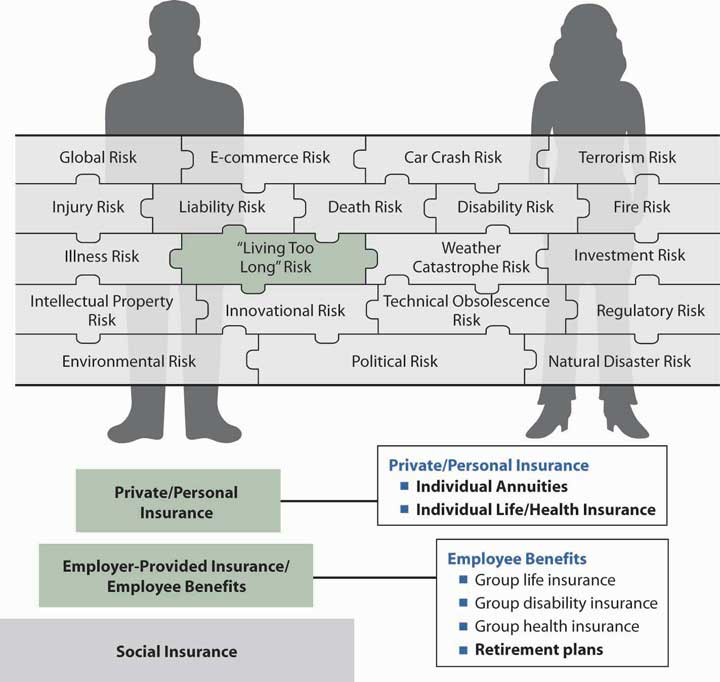
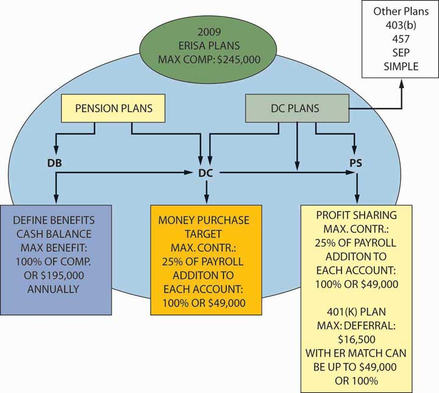

As noted earlier in this text, individuals rely on several sources for income during retirement: Social Security, employer-sponsored retirement plans, and individual savings (depicted in our familiar three-step diagram). In Chapter 18 "Social Security", we discussed how Social Security, a public retirement program, provides a foundation of economic security for retired workers and their families. Social Security provides only a basic floor of income; it was never intended to be the sole source of retirement income.
Employees may receive additional retirement income from employer-sponsored retirement plans. According to the Employee Benefit Research Institute (EBRI), of the $1.5 trillion in total employee benefit program outlays in 2007, employers spent $693.9 billion on retirement plans. Retirement obligations, mostly in the form of mandatory social insurance programs, made up the largest portion of employer spending on benefits in 2007.Employee Benefits Research Institute, EBRI Databook on Employee Benefits, ch. 2: “Finances of the Employee Benefit System,” updated September 2008, http://www.ebri.org (accessed April 17, 2009). Private retirement benefits are an important component of employee compensation, especially because many large employers are transitioning from providing a promise at retirement through a defined benefits plan (as explained later) into helping employees invest in 401(k) plans. Big corporations such as IBM froze their promise for defined benefits plans for new employees entering employment with the company. Watson Wyatt Worldwide found that seventy-one Fortune 1,000 companies that sponsored defined benefits plans froze or terminated their defined benefits plans in 2004, compared with forty-five in 2003 and thirty-nine in 2002. An example is Hewlett Packard where, effective 2006, newly hired employees and those not meeting certain age and service criteria are covered by 401(k) with matching only.Judy Greenwald, “Desire for Certainty, Savings Drives Shift from DB Plans,” Business Insurance, September 19, 2005, http://www.businessinsurance.com/cgi-bin/article.pl?articleId=17551&a=a&bt=desire+for+certainty,+savings (accessed April 17, 2009); Jerry Geisel, “HP to Phase out Defined Benefit Plan,” Business Insurance, July 25, 2005, http://www.businessinsurance.com/cgi-bin/article.pl?articleId=17263&a=a&bt=hp+to+phase+out (accessed April 17, 2009); Jerry Geisel, “Congress Responds to Pension Failure Stories,” Business Insurance, July 11, 2005, http://www.businessinsurance.com/cgi-bin/article.pl?articleId=17156&a=a&bt=pension+failure+stories (accessed April 17, 2009).
These issues and more will be clarified in this chapter as we discuss the objectives of group retirement plans, how plans are structured and funded, and the current retirement crisis for the baby boomers (U.S. workers born between 1946 and 1964) who are entering their golden retirement years.Matt Brady, “ACLI: Bush Is Right About the Boomers,” National Underwriter Online News Service, February 1, 2006, http://www.lifeandhealthinsurancenews.com/News/2006/2/Pages/ACLI--Bush-Is-Right-About-The-Boomers.aspx?k=bush+is+right+about+the+boomers (accessed April 17, 2009). The chapter covers the following topics:
In our search to complete the risk management puzzle of Figure 21.1 "Links between Holistic Risk Puzzle Pieces and Employee Benefits—Retirement Plans", we now add an important layer that is represented by the second step of the three-step diagram: employer-sponsored pension plans. The pension plans provided by the employer (in the second step of the three-step diagram) can be either defined benefit or defined contribution. Defined benefit pension plans ensure employees of a certain amount at retirement, leaving all risk to the employer who has to meet the specified commitment. Defined contribution, on the other hand, is a promise only to contribute an amount to the employee’s separate, or individual, account. The employee has the investment risk and no assurances of the level of retirement amount. Defined benefit plans are insured by the Pension Benefit Guaranty Corporation (PBGC), a federal agency that ensures the benefits up to a limit in case the pension plan cannot meet its obligations. The maximum monthly amount of benefits guaranteed under the PBGC in 2009 for a straight life annuity at 65 percent is $4,500 and for joint and 50 percent survivor annuity (explained later) is $4,050.Pension Benefit Guaranty Corporation (PBGC) News Division, “PBGC Announces Maximum Insurance Benefit for 2009,” November 3, 2008, http://www.pbgc.gov/media/news-archive/news-releases/2008/pr09-03.html (accessed April 17, 2009). The employee never contributes to this plan. The prevalence of this plan is on the decline in the new millennium. The PBGC protects 44 million workers and retirees in about 30,000 private-sector defined benefit pension plans.
Another trend that became prevalent and has received congressional attention is the move from the traditional defined benefit plans to cash balance plans, a transition that has slowed down in the first decade of the 2000s due to legal implications. Cash balance plans are defined benefit plans, though they are in a way a hybrid between defined benefit and defined contribution plans. More on cash balance plans, and all other plans, will be explained in this chapter and in the box “Cash Balance Conversions: Who Gets Hurt?”
The most common plans are the defined contribution pension plans. As noted above, under this type of plan, the employer provides employees with the money and the employees invest the funds. If the employees do well with their investments, they may be able to enjoy a prosperous retirement. Under defined contribution plans, in most cases, employees have some choices for investments. Plans such as money purchase, profit sharing, and target plans are funded by employers. In another type of defined contribution plan, employees contribute toward their retirement by forgoing their income or deferring it on a pretax basis, such as into 401(k), 403(b), or 457 plans. There are also Roth 401(k) and 403(b) plans, where employees contribute to the plans on an after-tax basis and never pay taxes on the earnings. These plans are sponsored by employers, and an employer may match some portion of an employee’s contribution in some of these deferred compensation plans. Because it is the employees’ savings, they can say that it belongs in the third step of Figure 21.1 "Links between Holistic Risk Puzzle Pieces and Employee Benefits—Retirement Plans". However, because it is done through the employer, it is also part of the second step. The pension plans discussed in this chapter are featured in Figure 21.2 "Retirement Plans by Type, Limits as of 2009".
Figure 21.1 Links between Holistic Risk Puzzle Pieces and Employee Benefits—Retirement Plans
Figure 21.2 Retirement Plans by Type, Limits as of 2009
As you can see, we need to know what we are doing when we invest our defined contribution retirement funds. During the stock market boom of the late 1990s, many small investors put most of their retirement funds in stocks. By the summer of 2002, the stock market saw some of the worst declines in its history, with a rebound by 2006. Among the reasons for the decline were the downturn in the economy; the terrorist attacks of September 11, 2001; and investors’ loss of trust in the integrity of the accounting numbers of many corporations. The fraudulent behavior of executives in companies such as Enron, WorldCom, and others led investors to consider their funds not just lost but stolen.Kara Scannell, “Public Pensions Come Up Short as Stocks’ Swoon Drains Funds,” Wall Street Journal, August 16, 2002. On July 29, 2002, President George W. Bush signed a bill for corporate governance or corporate responsibility to rebuild the trust in corporate America and punish fraudulent executives.Elisabeth Bumiller, “Bush Signs Bill Aimed at Fraud in Corporations,” New York Times, July 30, 2002. “The legislation, among other things, brought the accounting industry under federal supervision and stiffened penalties for corporate executives who misrepresent company finances.”Greg Hitt, “Bush Signs Sweeping Legislation Aimed at Curbing Business Fraud,” Wall Street Journal, July 21, 2002. Congress also worked on legislation to safeguard employee 401(k)s in an effort to prevent future disasters like the one suffered by Enron employees, who were not allowed (under the blackout period) to diversify their 401(k) investments and lost the funds when Enron declared bankruptcy. In May 2005, lawyers filed suits on behalf of AIG 401(k) participants, alleging that AIG violated the Employee Retirement Income Security Act by failing to disclose improper business practices and by disseminating false and misleading financial statements to investors that led to reductions in AIG stock prices.Jerry Geisel, “Senate Finance Committee Passes 401(k) Safeguards,” Business Insurance, July 11, 2002; “401(k) Participants File Class-Action Suit Against AIG,” BestWire, May 13, 2005; “Lawyers File Suit on Behalf of AIG Plan Members,” National Underwriter Online News Service, May 13, 2005. The reform objective is intended to give more oversight and safety measures to defined contribution plans because these plans do not enjoy the oversight and protection of the PBGC. The 2007–2008 economic recession has brought about a plethora of new problems and questions regarding the merits of defined contribution plans, which will be the subject of the box, “Retirement Savings and the Recession.”
In this chapter, we drill down into the specific pieces of the puzzle that bring us into many challenging areas. But we do need to complete the holistic risk management process we have started. This chapter delivers only a brief insight into the very broad and challenging area of pensions. Pensions are also featured as part of Case 2 in Chapter 23 "Cases in Holistic Risk Management".
In this section we elaborate on distinguishing aspects of qualified retirement plans:
A retirement plan may be qualified or nonqualified. The distinction is important to both employer and employee because qualification produces a plan with a favorable tax status. In a qualified planType of retirement plan where employer contributions to an employee’s pension during the employee’s working years are deductible as a business expense, are not taxable income to the employee until they are received as benefits, and investment earnings on funds held by the trustee for the plan are not subject to income taxes as they are earned., employer contributions to an employee’s pension during the employee’s working years are deductible as a business expense but are not taxable income to the employee until they are received as benefits. Investment earnings on funds held by the trustee for the plan are not subject to income taxes as they are earned.
Most nonqualifiedType of retirement plan that does not allow employer funding contributions to be deducted as business expenses unless classified as compensation to the employee (in which case they become taxable income for the employee), investment fund earnings are also subject to taxation, and retirement benefits are deductible business expenses when paid to the employee (if not previously classified as compensation). plans do not allow employer funding contributions to be deducted as a business expense unless they are classified as compensation to the employee, in which case they become taxable income for the employee. Investment earnings on these nonqualified accumulated pension funds are also subject to taxation. Retirement benefits from a nonqualified plan are a deductible business expense when they are paid to the employee, if not previously classified as compensation. Most nonqualified plans are for executives and designed to benefit only a small number of highly paid executives.
To be qualified, a plan must fulfill various requirements. These requirements prevent those in control of the organization from using the plan primarily for their own benefit. The following requirements are enforced by the United States Internal Revenue Service, the United States Department of Labor, and the Pension Benefit Guaranty Corporation (PBGC).
The Employee Retirement Income Security Act (ERISA) of 1974Federal law that regulates the design, funding, and communication aspects of qualified retirement plans; specifically, protects the benefits of plan participants and prevents discrimination in favor of highly compensated employees (those who control the organization). and subsequent amendments and laws—in particular, the Tax Reform Act of 1986 (TRA86)—are federal laws that regulate the design, funding, and communication aspects of private, qualified retirement plans. The most recent amendments include the Economic Growth and Tax Relief Reconciliation Act (EGTRRA) of 2001Federal law that regulates the design, funding, and communication aspects of qualified retirement plans; allows increases in retirement savings limits and mandates faster participant vesting in employers’ matching contributions to defined contribution plans. and the Pension Protection Act of 2006Federal law that regulates the design, funding, and communication aspects of qualified retirement plans; specifically, added permanency to EGTRRA 2001 laws and provides greater portability, increases in flexibility in plan funding and design, and administrative simplification.. In practice, the term ERISA is used to refer to the 1974 act and all subsequent amendments and related laws. The purpose of ERISA is twofold: to protect the benefits of plan participants and to prevent discrimination in favor of highly compensated employees (that is, those who control the organization).ERISA defines highly compensated and nonhighly compensated employees based on factors such as employee salary, ownership share of the firm, and whether the employee is an officer in the organization.
Within the guidelines and standards established by ERISA and subsequent federal laws, the employer must make some choices regarding the design of a qualified retirement plan. The main items covered by ERISA and subsequent laws and amendments are the following:
ERISA and all subsequent laws provide significant protection to plan participants. Over time, however, the nature of the work force changed from stable and permanent positions to mobile and transient positions, and it appeared that ERISA failed to address portability issues when employees changed jobs. ERISA and subsequent laws are also considered to have administrative difficulties and to be a burden on employers. While the percentage of the working population covered is still unchanged since 1974, the number of defined benefit plans has dropped significantly, from a high of 175,000 plans in 1983, and more employees are now covered under defined contribution plans. ERISA has a safety valve for defined benefit plans with the insurance provided by the PBGC. Plans such as 401(k)s do not have such a safety valve. Information on how to protect your pensions is available from the Department of Labor and is featured in the box “Ten Warning Signs That Pension Contributions Are Being Misused” in Chapter 20 "Employment-Based Risk Management (General)".
In 2001, EGTRRA addressed some of ERISA’s shortfalls and the 2006 Pension Protection Act provided some permanency to some of the EGTRRA laws. The new laws offer employers that sponsor plans more flexibility in plan funding and incentives by allowing greater tax deductions. The major benefits of EGTRRA are the increases in retirement savings limits and mandates of faster participant vesting in employers’ matching contributions to 401(k) plans. These changes became permanent with the adoption of the Pension Protection Act of 2006. Also, all employers’ contributions are now subject to faster vesting requirements. The new laws provide greater portability, increased flexibility in plan funding and design, and administrative simplification. The EGTRRA ten-year sunset provision was eliminated with the 2006 act.See information about the Pension Protection Act of 2006 at http://www.dol.gov/ebsa/pensionreform.html. For information about the pension laws, see many sources from the media, among them Vineeta Anand, “Lawyer Steven J. Sacher Says That for the Most Part ERISA Has Performed ‘Smashingly Well,’” Pensions & Investments, September 6, 1999, 19; Barry B. Burr, “Reviewing Options: Enron Fallout Sparks Much Soul-Searching; Experts Debate Need for Change Following Huge Losses in 401(k),” Pensions & Investments, 30 (2002): 1; William G. Gale et. al, “ERISA After 25 Years: A Framework for Evaluating Pension Reform,” Benefits Quarterly, October 1, 1998; Lynn Miller, “The Ongoing Growth of Defined Contribution and Individual Account Plans: Issues and Implications,” EBRI Issue Brief, no. 243 (2002), http://www.ebri.org/publications/ib/index.cfm?fa=ibDisp&content_id=160, accessed April 17, 2009; Martha Priddy Patterson, “A New Millennium for Retirement Plans: The 2001 Tax Act and Employer Flexibility,” Benefits Quarterly, January 1, 2002.
A pension plan must establish eligibility criteriaDetermines who participates in employer pension plans, subject to ERISA, the Age Discrimination in Employment Act, and other federal requirements. for determining who is covered. Most plans exclude certain classes of employees. For example, part-time or seasonal employees may not be covered. Separate plans may be set up for those paid on an hourly basis. Excluding certain classes of employees is allowed, provided the plan does not discriminate in favor of highly compensated employees, meets minimum eligibility requirements, and passes the tests noted below.
Under ERISA, the minimum eligibility requirements are the attainment of age twenty-one and one year of service. A year of service is defined as working at least 1,000 hours within a calendar year.The service requirement may be extended to two years in the small minority of plans that have immediate vesting. Vesting is defined later in the chapter. This is partly to reduce costs of enrolling employees who cease employment shortly after being hired, and partly because most younger employees attach a low value to benefits they will receive many years in the future. The Age Discrimination in Employment Act eliminates all maximum age limits for eligibility. Even when an employee is hired at an advanced age, such as seventy-one, the employee must be eligible for the pension plan within the first year of service if the plan is offered to other, younger hires in the same job.
In addition to eligibility rules, ERISA has coverage requirementsERISA provisions designed to improve participation in qualified pension plans by nonhighly compensated employees. that are designed to improve participation by nonhighly compensated employees. All employees of businesses with related ownership (called a controlled groupEmployees of businesses with related ownership; treated for coverage requirements as if employees of one plan.) are treated for coverage requirements as if they were employees of one plan.
To make a reasonable estimate of the cost of some retirement plans, mainly defined benefit plans, it is necessary to establish a retirement age for plan participants. For other types of plans, mainly defined contribution plans, setting a retirement age clarifies the age at which no additional employer contributions will be made to the employee’s plan. The normal retirement ageThe age at which full retirement benefits become available to retirees; age sixty-five in most private retirement plans. is the age at which full retirement benefits become available to retirees. Most private retirement plans specify age sixty-five as the normal retirement age.
Early retirement may be allowed, but that option must be specified in the pension plan description. Usually, early retirement permanently reduces the benefit amount. For example, an early retirement provision may allow the participant to retire as early as age fifty-five if he or she also has at least thirty years of service with the employer. The pension benefit amount, however, would be reduced to take into account the shorter time available for fund accumulation and the likely longer period that benefits will be paid out.
Early retirement plans used to be very appealing both to long-timers and to employers who saw replenishment of the work force. In 2001, companies such as Procter & Gamble, Tribune Company, and Lucent Technologies used early retirement as an alternative to layoffs. Since the decline of old-fashioned defined benefit pensions, employees have less incentive to take early retirement. With defined contribution plans, employees continue to receive the employer’s contribution or defer their compensation to a 401(k) plan as long as they work. The benefits are not frozen at a certain point, as in the traditional defined benefit plans. Mandatory retirement is considered age discrimination, except for executives in high policy-making positions. Thus, a plan must allow for late retirement. Deferral of retirement beyond the normal retirement age does not interfere with the accumulation of benefits. That is, working beyond normal retirement age may produce a pension benefit greater than would have been received at normal retirement age. However, a plan can set some limits on total benefits (e.g., $50,000 per year) or on total years of plan participation (e.g., thirty-five years). These limits help control employer costs.
A pension plan may be contributory or noncontributory. A contributory planPension plan that requires the employee to pay all or part of pension fund contributions. requires the employee to pay all or part of the pension fund contribution. A noncontributory planPension plan funded only by employer contributions. is funded only by employer contributions; that is, the employee does not contribute at all to the plan. ERISA requires that if an employee contributes to a pension plan, the employee must be able to recover all these contributions, with or without interest, if she or he leaves the firm.
Employer contributions and earnings are available to employees who leave their employment only if the employees are vested. VestingIn pension plans, specifies the extent of employee’s right to benefits for which the employer has made contributions, subject to ERISA, EGTRRA 2001, TRA86, and other federal requirements., or the employee’s right to benefits for which the employer has made contributions, depends on the plan provisions. The TRA86 amendment to the original ERISA vesting schedule and EGTRRA 2001 established minimum standards to ensure full vesting within a reasonable period of time. The Pension Protection Act of 2006 provides that the minimum vesting requirements for employers’ contributions matches those that were required for 401(k)s by EGTRRA. For defined contribution plans, the employer can choose one of the two minimum vesting schedules (or better) as follows:
For defined benefit plans, the employer can choose one of the two minimum vesting schedules (or better) as follows:
Top-heavy plansPension plans in which the owners or highest-paid employees hold over 60 percent of the value of the plans. are those in which the owners or highest-paid employees hold over 60 percent of the value of the pension plan. The dollar limitation under Section 416(i)(1)(A)(i) concerning the definition of key employee in a top-heavy plan has increased from $150,000 in 2008, to $160,000 in 2009.Internal Revenue Service (IRS), “IRS Announces Pension Plan Limitations for 2009,” IR-2008-118, October 16, 2008, http://www.irs.gov/newsroom/article/0,,id=187833,00.html, accessed April 17, 2009. If an employer has a top-heavy defined benefit plan, the minimum vesting schedule is as of the defined contribution plans.
The employer’s plan must meet one of the following coverage requirements:
The limitation used in the definition of highly compensated employee under Section 414(q)(1)(B) has increased from $105,000 in 2008 to $110,000 in 2009.Internal Revenue Service (IRS), “IRS Announces Pension Plan Limitations for 2009,” IR-2008-118, October 16, 2008, http://www.irs.gov/newsroom/article/0,,id=187833,00.html, accessed April 17, 2009. Although the objective of coverage rules is to improve participation by nonhighly compensated employees, the expense and administrative burden of compliance discourages small employers from having a qualified retirement plan.
Distributions are benefits paid out to participants or their beneficiaries, usually at retirement. Tax penalties are imposed on plan participants who receive distributions (except for disability benefits) prior to age fifty-nine and a half. However, the law requires that benefits begin by age seventy and a half, whether retirement occurs or not. Depending on the provisions of the particular plan, distributions may be made (1) as a lump sum, (2) as one of several life annuity options (as explained in the settlement options in Chapter 19 "Mortality Risk Management: Individual Life Insurance and Group Life Insurance"), or (3) over the participant’s life expectancy. At age seventy and a half, the distribution requirements under ERISA direct the retiree to collect a minimum amount each year based on longevity tables.April K. Caudill, “More Clarity and Simplicity in New Required Minimum Distribution Rules,” National Underwriter, Life & Health/Financial Services Edition, May 13, 2002. Because of recent census data, Congress directed changes in the required minimum distribution calculations under EGTRRA 2001.The regulations state that the new method can be used to calculate substantially equal periodic payments under Section 72(t)—distributions of retirement funds after age seventy and a half.
The longest time period over which benefits may extend is the participant’s life expectancy. ERISA requires that pension plan design make spousal benefits available. Once the participant becomes vested, the spouse automatically becomes eligible for a qualified preretirement survivor annuityProvision made possible once a participant becomes vested in a pension plan that gives lifetime benefits to the spouse if the participant dies before the earliest retirement age allowed by the plan.. This provision gives lifetime benefits to the spouse if the participant dies before the earliest retirement age allowed by the plan. Once the participant reaches the earliest retirement age allowed by the plan, the spouse becomes eligible for benefits under a joint and survivor annuityProvision made possible once a participant reaches the earliest allowed retirement age that qualifies the spouse for a lifetime benefit in the event of the participant’s death (in most cases, 50 percent of the annuity). option. This qualifies the spouse for a lifetime benefit in the event of the participant’s death. In most cases, the spouse receives 50 percent of the annuity. Upon the employee’s retirement, the spouse remains eligible for this benefit. These benefits may be waived only if the spouse signs a notarized waiver.
Employees who need to use their account balances are advised to take a loan rather than terminate their employment and receive distribution. The distribution results not only in tax liability but also in a 10 percent penalty if the employee is younger than 59½ years old. The loan provisions require that an employee can take only up to 50 percent of the vested account balance for not more than $50,000. A loan of $10,000 may be made even if it is greater than 50 percent of the vested account balance. The number of loans is not limited as long as the total amount is within the required limits. Some employers do not provide loan provisions in their retirement plan.
In this section you studied qualified employee retirement plans, which allow tax-deductible contributions for employees and tax deferral for employees:
If an employer has 1,000 employees with 30 percent made up of highly compensated employees and 70 percent made up of nonhighly compensated employee, would the employers pass the ratio test
An employer is considering the following vesting schedules. Determine if these schedules comply with the laws governing qualified retirement plans:
In this section we elaborate on the various qualified plans available through employers or on an individual basis:
As noted above and as shown in Figure 21.2 "Retirement Plans by Type, Limits as of 2009", employers choose a pension plan from two types: defined benefit or defined contribution. Both are qualified plans that provide tax-favored arrangements for retirement savings.
Figure 21.2 "Retirement Plans by Type, Limits as of 2009" displays the different qualified retirement plans. Defined benefit (DB) and defined contribution (DC) pension plans are shown in the first two left-hand squares. The defined contribution profit-sharing (PS) plan is shown in the third left-hand rectangle. The leftmost square represents the highest level of financial commitment by an employer; the profit-sharing rectangle represents the least commitment. The profit-sharing plan is funded at the discretion of the employer during periods of profits, whereas pension plans require annual minimum funding. This is why the employer is giving greater commitment to pension plans—contributions are required even in bad years. Among the pension plans, the traditional defined benefit plan represents the highest level of employer’s commitment. It is a promise that the employee will receive a certain amount of income replacement at retirement. The benefits are defined by a mathematical formula, as will be shown later. Actuaries calculate the amount of the annual contribution necessary to fund the retirement promise given by the employer. As noted above, the PBGC provides insurance to guarantee these benefits (up to the maximum shown above) at a cost to the employer of $34 per employee per year (since 2009). Because the traditional defined benefit pension plan is the plan with the greatest commitment, usually a high level of contribution is allowed for older employees. The annual compensation limit under IRS sections 401(a)(17), 404(l), 408(k)(3)(C), and 408(k)(6)(D)(ii) has increased from $230,000 in 2008 to $245,000 in 2009, and the limitation on the annual benefit under a defined benefit plan under Section 415(b)(1)(A) has increased from $185,000 to $195,000 in 2009 or 100 percent of compensation.Internal Revenue Service (IRS), “IRS Announces Pension Plan Limitations for 2009,” IR-2008-118, October 16, 2008, http://www.irs.gov/newsroom/article/0,,id=187833,00.html (accessed April 17, 2009). These are shown in Figure 21.2 "Retirement Plans by Type, Limits as of 2009".
Another defined benefit plan is the cash balance plan. As discussed above, it is a hybrid of the traditional defined benefit plan and defined contribution plans. In a cash balance plan, the employer commits to contribute a certain percentage of compensation each year and guarantees a rate of return. Under this arrangement, employees are able to calculate the exact lump sum that will be available to them at retirement because the employer guarantees both contributions and earnings. This plan favors younger employees. It is currently the topic of court cases and debate because many large corporations such as IBM converted their traditional defined benefits plans to cash balance, grandfathering the older employees’ benefits under the plan.For more information, see coverage of this topic in the following sample of articles: “Sun Moves to Cash Balance Pensions,” Employee Benefit Plan Review 45, no. 9 (1991): 50–51; Arleen Jacobius, “Motorola Workers Embrace New Hybrid Pension Plan,” Business Insurance 34, no. 45 (2000): 36–37; Karl Frieden, “The Cash Balance Pension Plan: Wave of the Future or Shooting Star?” CFO: The Magazine for Chief Financial Officers 3, no. 9 (1987): 53–54; September 1987; Avra Wing, “Employers Wary of Cash Balance Pensions,” Business Insurance 20, no. 39 (1986): 15–20; September 29, 1986; Arleen Jacobius, “60 percent of Workers at Motorola, Inc. Embrace Firm’s New PEP Plan,” Pensions & Investment Age 28, no. 19 (2000): 3, 58; Jerry Geisel, “Survey Aims to Find Facts About Cash Balance Plans,” Business Insurance 34, no. 21 (2000): 10–12; “American Benefits Council President Discusses Cash Balance Plans, Pension Reform,” Employee Benefit Plan Review 55, no. 4 (2000): 11–13; Donna Ritter Mark, “Planning to Implement a Cash Balance Pension Plan? Examine the Issues First,” Compensation & Benefits Review 32, no. 5 (2000): 15–16; Vineeta Anand, “Young and Old Hurt in Switch to Cash Balance,” Pensions & Investment Age 28, no. 20 (2000): 1, 77; Vineeta Anand, “Employees Win Another One in Cash Balance Court Cases,” Pensions & Investment Age 28, no. 19 (2000): 2, 59; Regina Shanney-Saborsky, “The Cash Balance Controversy: Navigating the Issues,” Journal of Financial Planning 13, no. 9 (2000): 44–48. See the box, “Cash Balance Conversions: Who Gets Hurt?”
A cash balance plan is considered a hybrid plan because the contributions are guaranteed. The benefits are not explicitly defined but are the outcome of the length of time the employee is in the pension plan. Because both the contributions and rates of return are guaranteed, the amount available at retirement is therefore also guaranteed. It is an insured plan under the PBGC, and all funds are kept in one large account administered by the employer. The employees have only hypothetical accounts that are made of the contributions and the guaranteed returns. As noted above, it is a defined benefit plan that looks like a defined contribution plan.
The simplest of the defined contribution pension plans is the money purchase plan. Under this plan, the employer guarantees only the annual contribution but not any returns. As opposed to a defined benefit plan, where the employer keeps all the monies in one account, the defined contribution plan has separate accounts under the control of the employees. The investment vehicles in these accounts are limited to those selected by the employer who contracts with various financial institutions to administer the investments. If employees are successful in their investment strategy, their retirement benefits will be larger. The employees are not assured an amount at retirement, and they have the investment risk, not the employer. This aspect is illuminated by the 2008–2009 recession and discussed in the box “Retirement Savings and the Recession.” Because the employer is at less of an investment risk here and the employer’s commitment is lower, the tax benefit is not as great (especially for older employees). The limitation for defined contribution plans under Section 415(c)(1)(A) has increased from $46,000 in 2008 to $49,000 in 2009 or 100 percent of the employee’s compensation.Internal Revenue Service (IRS), “IRS Announces Pension Plan Limitations for 2009,” IR-2008-118, October 16, 2008, http://www.irs.gov/newsroom/article/0,,id=187833,00.html (accessed April 17, 2009).
Another defined contribution plan is the target pension plan, which favors older employees. This is another hybrid plan, but this is actually a defined contribution plan (subject to the $49,000 and 100 percent limitation in 2009) that looks like a traditional defined benefits plan in its first year only. Details about this plan are beyond the scope of this text.
For employers seeking the least amount of commitment, the profit-sharing plan is the solution. These are defined contribution plans that are not pension plans. There is no minimum funding requirements each year. As of 2003 and onward, the maximum allowed tax deductible contribution by employer per year is 25 percent of payroll. This is also a major change in effect after the enactment of EGTRRA 2001. The level used to be only 15 percent of payroll, with limits of an annual addition to each account of $35,000 or 25 percent in 2001. The additions to each account are up to the lesser of $49,000 or 100 percent of compensation in 2009.Internal Revenue Service (IRS), “IRS Announces Pension Plan Limitations for 2009,” IR-2008-118, October 16, 2008, http://www.irs.gov/newsroom/article/0,,id=187833,00.html (accessed April 17, 2009). The 401(k) is part of the tax code for a profit-sharing plan, but it is not designed as an employer contribution. Rather, it is a pretax-deferred compensation contribution by the employee with possible matching by an employer. See Tables 21.6 and 21.7 later in this chapter for the limits if the employer meets the discrimination testing or falls under certain safe-harbor provisions. As shown, EGTRRA 2001 increased the permitted deferred compensation under 401(k) plans gradually up to $16,500Internal Revenue Service (IRS), “IRS Announces Pension Plan Limitations for 2009,” IR-2008-118, October 16, 2008, http://www.irs.gov/newsroom/article/0,,id=187833,00.html (accessed April 17, 2009). (in 2009) from the level of $10,500 in 2001. On January 1, 2006, Internal Revenue Code (IRC) §402A providing for Roth 401(k)s and Roth 403(b)s (discussed later) became effective. This also is an outcome of EGTRRA 2001 with a delayed effective date. Roth 401(k) and Roth 403(b) means that the contributions are after-tax, but earnings are never taxed. EGTRRA 2001 has catch-up provisions. The explanation of the 401(k) plan includes an example of the average deferral percentage (ADP) discrimination test used for 401(k) plans. When an employer adds matching, profit sharing, or any other defined contribution plans, the amount of annual additions to the individual accounts cannot exceed the lesser of $49,000 or 100 percent of compensation, including the 401(k) deferral in 2009.Internal Revenue Service (IRS), “IRS Announces Pension Plan Limitations for 2009,” IR-2008-118, October 16, 2008, http://www.irs.gov/newsroom/article/0,,id=187833,00.html (accessed April 17, 2009). The combination of 401(k) and any other profit-sharing contributions cannot exceed 25 percent of payroll. Nearly two-thirds of all U.S. large employers consider the 401(k) as the main retirement plan for their employees.“New Research from EBRI: Defined Contribution Retirement Plans Increasingly Seen as Primary Type,” Reuters, February 9, 2009, http://www.reuters.com/article/pressRelease/idUS166119+09-Feb-2009+PRN20090209, accessed March 10, 2009.
An employee stock ownership plan (ESOP) is another type of profit-sharing plan. An ESOP is covered only briefly in this text. This section also provides a brief description of other qualified plans such as 403(b), 457, Savings Incentive Match Plan for Employees (SIMPLE), Simplified Employee Pension (SEP), traditional IRA, and Roth IRA. EGTRRA 2001 made major changes to these plans, as well as to the plans discussed so far. Traditional IRA and Roth IRA are not sponsored by the employer, but require employee compensation through employment.
Over the past two decades, a number of employers have switched their traditional defined benefit pension plans to cash balance plans. Employers like cash balance plans because they are less expensive than traditional plans, in part, because they do not require the high administrative cost and large contributions for employees who are near retirement. Also, cash balance benefit plans may pay out less because they base their benefits on an employee’s career earnings, while defined benefit plans are based on the final years of salary, when earnings usually peak.
In November 2002, Delta Airlines joined the cash balance trend, citing the soaring costs of its underfunded traditional pension plan as the reason. Like Delta, many companies have implemented cash balance plans by converting their old defined benefit plans. In doing so, they determine an employee’s accrued benefit under the old plan and use it to set an opening balance for a cash balance account. While the opening account of a cash balance account can end up being less than the actual present value of the benefits an employee has already accrued (called wear away), cash balance plans have the advantage of portability. The traditional defined benefits plan is not portable because an employee who leaves a job may need to leave the accrued and vested benefits with the employer until retirement. Cash balance plans are considered very portable. The plan is similar to defined contribution plans because the employee knows at any moment the value of his or her hypothetical account that is built up as an accumulation of employer’s contributions and guaranteed rate of return. For this reason, cash balance plans are advertised as advantageous for today’s mobile work force. Also, cash balance plans are considered best for younger workers because these employees have many years to accumulate their hypothetical account balances.
However, these conversions have not been free of major controversies. Older employees, who do not have a long enough time to accumulate the account balance, in most cases are granted continuation under the old plan, under a grandfather clause. Midcareer employees in their forties have most to risk because it is uncertain whether the new cash balance plans can actually catch up to the old promise of defined benefits at age sixty-five. Plan critics have repeatedly charged that pay credits discriminate against older employees because the credits they receive would purchase a smaller annuity at normal retirement age than would those received by younger employees. Numerous lawsuits alleging discrimination have been filed against employers offering the plans.
IBM’s conversion in 1999 provides a notorious example of the pitfalls of conversion for midcareer employees. When IBM announced the conversion, it was inundated with hundreds of thousands of e-mails complaining about the change, so the company repeatedly tweaked its plan. Still, many employees are not satisfied when they compare the new plan with the defined benefit plan they might otherwise have received. A federal court gave a final approval to partial settlement between IBM and tens of thousands of current and former employees about the conversion. Under one part of the settlement, IBM has to pay more than $300 million to plan participants in the form of enhanced benefits. Since the partial settlement was proposed, IBM had frozen its cash balance plan, with employees hired as of January 1, 2005, receiving pension coverage under an enriched 401(k) plan.
The 2005 U.S. Government Accountability Office (GAO) report regarding cash balance pension plans concluded that cash balance plans do cut benefits. In July 2005, congressional committees passed legislation to make clear that cash balance plans do not violate age discrimination law, but the measures do not apply to existing plans. This relates to a court case that provided victory for employers. The judge dismissed a case against PNC Financial Services Group that was brought on behalf of its employees and retirees in connection with the company’s switch to a cash balance plan. The Pittsburgh-based PNC replaced its traditional defined benefit plan in 1999. The plaintiffs filed suit against the company and its pension plan in December 2004, arguing that the plan was age discriminatory, among other allegations. Judge D. Davis Legrome of the U.S. District Court in Philadelphia dismissed all the charges against the company in his decision (Sandra Register v. PNC Financial Services Group, Inc.).
To soften the effects of cash balance conversion, many companies offer transitional benefits to older employers. Some companies allow their workers to choose between the traditional plan and the cash balance plan. Others offer stock options or increased contributions to employee 401(k) plans to offset the reduction in pension benefits.
Questions for Discussion
Sources: Jerry Geisel, “Delta’s New Pension Plan to Generate Big Savings,” Business Insurance, November 25, 2002, http://www.businessinsurance.com/cgi-bin/article.pl?articleId=12013&a=a&bt=delta’s+new+pension+plan (accessed April 17, 2009); Jonathan Barry Forman, “Legal Issues in Cash Balance Pension Plan Conversions,” Benefits Quarterly, January 1, 2001, 27–32; Lawrence J. Sher, “Survey of Cash Balance Conversions,” Benefits Quarterly, January 1, 2001, 19–26; Robert L. Clark, John J. Haley, and Sylvester J. Schieber, “Adopting Hybrid Pension Plans: Financial and Communication Issues,” Benefits Quarterly, January 1, 2001, p. 7–17; “Cash Balance Plans Questions & Answers,” U.S. Department of Labor, November 1999, https://www.dol.gov/ebsa/publications/cb_pension_plans.html (accessed April 17, 2009); Jerry Geisel, “Proposed Rules Clarify Cash Balance Plan Status,” Business Insurance, December 10, 2002.; Jerry Geisel “Court Gives Final Approval in IBM Pension Case,” Business Insurance, August 15, 2005, http://www.businessinsurance.com/cgi-bin/article.pl?articleId=17389&a=a&bt=court+gives+final+approval+ibm (accessed April 17, 2009); Jerry Geisel, “Effort to Dispel Cash Balance Doubts Criticized for Ignoring Existing Plans,” Business Insurance , August 1, 2005, http://www.businessinsurance.com/cgi-bin/article.pl?articleId=17312&a=a&bt=effort+to+dispel+cash+balance (accessed April 17, 2009); Judy Greenwald, “Court Ruling Favors Cash Balance Conversions,” Business Insurance, November 23, 2005, http://www.businessinsurance.com/cgi-bin/news.pl?newsId=6781, accessed April 17, 2009; Jerry Geisel “Cash Balance Plan Conversions Cut Benefits: GAO,” Business Insurance, November 4, 2005.
A defined benefit (DB) planType of pension plan that assures employees of a certain amount at retirement, leaving all risk to the employer to meet the specified commitment; accumulated funds for all participants are managed in one account. has the distinguishing characteristic of clearly defining, by its benefit formula, the amount of benefit that will be available at retirement. That is, the benefit amount is specified in the written plan document, although the amount that must be contributed to fund the plan is not specified.
In a defined benefit plan, any of several benefit formulas may be used in the following:
Each type has advantages and disadvantages, and the employer selects the formula that best meets both the needs of employees for economic security and the budget constraints of the employer.
The defined benefit formula may specify a flat dollar amount, such as $500 per month. It may provide a formula by which the amount can be calculated, yielding a flat percentage of current annual salary (or the average salary of the past five years or so). For example, a plan may specify that each employee with at least twenty years of participation in the plan receives 50 percent of his or her average annual earnings during the three consecutive years of employment with the highest earnings. A flat amount unit benefit formula assigns a flat amount (e.g., $25) with each unit of service, usually with each year. Thus, an employee with thirty units of service at retirement would receive a benefit equal to thirty times the unit amount.
The most popular defined benefit formula is the percentage unit benefit plan. It recognizes both the employee’s years of service and level of compensation. See Table 21.1 "The Slone-Jones Dental Office: Standard Defined Benefit Pension Plan (Service Unit Formula, 2009)" for an example. Tables 21.1 through 21.5 feature different qualified retirement plans for the Slone-Jones Dental Office. The dental office is used as an example to demonstrate how each plan would work for the same mix of employees.
Table 21.1 The Slone-Jones Dental Office: Standard Defined Benefit Pension Plan (Service Unit Formula, 2009)
| (1) | (2) | (3) | (4) | (5) | (6) | (7) | |
|---|---|---|---|---|---|---|---|
| Employees | Current Age | Current Salary | Allowable Compensation | Years of Service | Years of Service to Age 65 | Maximum Allowed Benefit | Expected Benefit at Age 65 2% × (3) × (5) |
| Dr. Slone | 55 | $250,000 | $245,000 | 20 | 30 | $195,000 | $90,000 |
| Diane | 45 | $55,000 | $55,000 | 10 | 30 | 55,000 | $11,000 |
| Jack | 25 | $30,000 | $30,000 | 5 | 45 | 30,000 | $3,000 |
When the compensation base is described as compensation for a recent number of years (e.g., the last three or highest consecutive five years), the formula is referred to as a final average formulaSets the compensation base as compensation for a recent number of years (e.g., the last three or highest consecutive five years) in computing the retirement benefit in a defined benefit plan; tends to keep the initial benefit in line with inflation.. Relative to a career average formulaBases benefits on average compensation for all years of service under the plan in computing the retirement benefit in a defined benefit plan., which bases benefits on average compensation for all years of service in the plan, a final average plan tends to keep the initial retirement benefit in line with inflation.
Two types of service are involved in the benefit formula: past service and future service. Past service refers to service prior to the installation of the plan. Future service refers to service subsequent to the installation of the plan. If credit is given for past service, the plan starts with an initial past service liability at the date of installation. To reduce the size of this liability, the percentage of credit for past service may be less than that for future service, or a limit may be put on the number of years of past service credit. Initial past service liability may be a serious financial problem for the employer starting or installing a pension plan. Past service liability or supplemental liabilityIn a retirement benefit formula, past service liability giving credit to employees’ service prior to the adoption of a defined benefits plan; can be amortized over a certain number of years. can be amortized over a certain number of years, not to exceed thirty years for a single employer.
The cash balance planDefined benefit plan that is a hybrid of the traditional defined benefit plan and a defined contribution plan where the employer commits to contribute a certain percentage of compensation each year and guarantees a rate of return such that employees can calculate the exact lump sum that will be available at retirement (since the employer guarantees both contributions and earnings). does not provide an amount of benefit that will be available for the employee at retirement. Instead, the cash balance plan sets up a hypothetical individual account for each employee, and credits each participant annually with a plan contribution (usually a percentage of compensation). The employer also guarantees a minimum interest credit on the account balance. For example, an employer might contribute 10 percent of an employee’s salary to the employee’s plan each year and guarantee a minimum rate of return of 4 percent on the fund, as shown in Table 21.2 "The Slone-Jones Dental Office: Standard Cash Balance Plan (2009)". If investment returns turn out to be higher than 4 percent, the employer may credit the employee account with the higher rate. The amount available to the employee at retirement varies, based on wage rates and investment rates of return. Although the cash balance plan is technically a defined benefit plan, it has many of the same characteristics as defined contribution plans. These characteristics include hypothetical individual employee accounts, a fixed employer contribution rate, and an indeterminate final benefit amount because employee compensation changes over time and interest rates may turn out to be well above the minimum guaranteed rate.
Table 21.2 The Slone-Jones Dental Office: Standard Cash Balance Plan (2009)
| (1) | (2) | (3) | (4) | (5) | (6) | (7) | (8) | |
|---|---|---|---|---|---|---|---|---|
| Employees | Current Age | Current Salary | Allowed Compensation | Maximum Benefit | Contribution Year (10%) | Years to Retirement | Future Value of $1 Annuity at 4% | Lump Sum at Age 65 (7) × (5) |
| Dr. Slone | 55 | $250,000 | $245,000 | $195,000 | $24,500 | 10 | 12.006 | $294,147 |
| Diane | 45 | $55,000 | $55,000 | 55,000 | $5,500 | 20 | 29.778 | $163,779 |
| Jack | 25 | $30,000 | $30,000 | 30,000 | $3,000 | 40 | 95.024 | $285,072 |
All defined benefit plans may provide for adjustments to account for inflation during the retirement years. A plan that includes a cost-of-living adjustment (COLA)Increases retirement benefits automatically with changes in a cost-of-living or wage index to account for inflation during retirement years. clause has the ideal design feature. Benefits increase automatically with changes in a cost-of-living or wage index.
Many plans integrate the retirement benefit with Social Security benefits. An integrated planDefined benefit plan that coordinates Social Security benefits (or contributions) with the benefit (or contribution) formula, thus reducing private retirement benefits based on the amount received through Social Security and lowering employer costs. coordinates Social Security benefits (or contributions) with the private plan’s benefit (or contribution) formula. Integration reduces private retirement benefits based on the amount received through Social Security, thus reducing the cost to employers of the private plan. On the other hand, integration allows employees with higher income to receive greater benefits or contributions, depending on the formula. The scope of this text is too limited to explore the exact mechanism of integrated plans. There are two kinds of plans. The offset method reduces the private plan benefit by a set fraction. This approach is applicable only to defined benefit plans. The second method is the integration-level method. Here, a threshold of compensation, such as the wage base level shown in Chapter 18 "Social Security", is specified, and the rate of benefits or contributions provided below this compensation threshold is lower than the rate for compensation above the threshold. The integration-level method may be used for defined benefit or defined contribution pension plans.
As noted above, defined benefits up to specified levels are guaranteed by the Pension Benefit Guarantee Corporation (PBGC)Federal agency that ensures the benefits of defined benefit plans up to annual limits in case the pension plan cannot meet its obligations., a federal insurance program somewhat like the Federal Deposit Insurance Corporation (FDIC) for commercial bank accounts, and like the Guarantee Funds for Insurance. All defined benefit plans contribute an annual fee (or premium) per pension plan participant to finance benefits for members of insolvent terminated plans. The premium amount takes into account, to a degree, the financial soundness of the particular plan, measured by the plan’s unfunded vested benefit. Thus, plans with a greater unfunded vested benefit pay a greater PBGC premium (up to a maximum amount), providing an incentive to employers to adequately fund their pension plans. Despite this incentive, there is national concern about the number of seriously underfunded pension plans insured by the PBGC. If these plans were unable to pay promised retirement benefits, the PBGC would be liable, and PBGC funds may be insufficient to cover the claims. Taxpayers could end up bailing out the PBGC. Careful monitoring of PBGC fund adequacy continues, and funding rules may be tightened to keep the PBGC financially sound.
Annual pension contributions and plan liabilities for a defined benefit plan must be estimated by an actuary. (Actuaries with pension specialties are called enrolled actuaries.) The time value of money explained in Chapter 4 "Evolving Risk Management: Fundamental Tools" is used extensively in the computations of pensions. The defined amount of benefits becomes the employer’s obligation, and contributions must equal whatever amount is necessary to fund the obligation. The estimate of cost depends on factors such as salary levels; normal retirement age; current employee ages; and assumptions about mortality, turnover, investment earnings, administrative expenses, and salary adjustment factors (for inflation and productivity). These factors determine estimates of how many employees will receive retirement benefits, how much they will receive, when benefits will begin, and how long benefits will be paid.
Normal costsIn defined benefit plans, the annual amount needed to fund pension benefits during an employee’s working years. reflect the annual amount needed to fund the pension benefit during the employee’s working years. Supplemental costsIn defined benefit plans, the amounts necessary to amortize any past service liability over a period that may vary from ten to thirty years. are the amounts necessary to amortize any past service liability, which is explained above, over a period that may vary from ten to thirty years. Total cost for a year is the sum of normal and supplemental costs. Under some methods of calculation, normal and supplemental costs are estimated as one item. Costs may be estimated for each employee and then added to yield total cost, or a calculation may be made for all participants on an aggregate basis.
Defined benefit plan administration is expensive compared with defined contribution plans because of actuarial expense and complicated ERISA regulations. This explains in part why about 75 percent of the plans established since the passage of ERISA have been defined contribution plans.
A defined contribution (DC) planType of pension plan that promises only to contribute an amount to the employee’s separate or individual account; the employee has the investment risk and no assurances of the level of retirement amount; has separate accounts under the control of each participant. is a qualified pension plan in which the contribution amount is defined but the benefit amount available at retirement varies. This is in direct contrast to a defined benefit plan, in which the benefit is defined and the contribution amount varies. As with the defined benefit plan, when the defined contribution plan is initially designed, the employer makes decisions about eligibility, retirement age, integration, vesting schedules, and funding methods.
The most common type of defined contribution plan is the money purchase planIn this simplest of the defined contribution plans, the employer guarantees only the annual contribution to an employee’s retirement account, but not any returns.. This plan establishes an annual rate of employer contribution, usually expressed as a percentage of current compensation; for example, a plan may specify that the employer will contribute 10 percent of an employee’s salary, as shown in the example in Table 21.3 "The Slone-Jones Dental Office: Standard Money Purchase Plan (2009)". Separate accounts are maintained to track the current balance attributable to each employee, but contributions may be commingled for investment purposes.
Table 21.3 The Slone-Jones Dental Office: Standard Money Purchase Plan (2009)
| (1) | (2) | (3) | (4) | (5) | (6) | (7) | (8) | (9) | |
|---|---|---|---|---|---|---|---|---|---|
| Employees | Age | Current Salary | Allowed Compensation | Service | Maximum Contribution Allowed | Contribution at 10.00% (3) × 0.10 | Years to Retirement | Future Value of $1 Annuity at 10% | Lump Sum at Retirement (6) × (8) |
| Dr. Slone | 55 | $250,000 | $245,000 | 20 | $49,000 | $24,500 | 10 | 15.937 | $390,457 |
| Diane | 45 | $55,000 | $55,000 | 10 | $49,000 | $5,500 | 20 | 57.274 | $315,007 |
| Jack | 25 | $30,000 | $30,000 | 5 | $30,000 | $3,000 | 40 | 442.58 | $1,327,740 |
The benefit available at retirement varies with the contribution amount, the length of covered service, investment earnings, and retirement age, as you can see in Column 9 of Table 21.3 "The Slone-Jones Dental Office: Standard Money Purchase Plan (2009)". Some plans allow employees to direct the investment of their own pension funds, offering several investment options. Generally, retirement age has no effect on a distribution received as a lump sum, fixed amount, or fixed period annuity. Retirement age affects the amount of income received only under a life annuity option.
From the perspective of an employer or employee concerned with the adequacy of retirement income, the contributions that typically have the longest time to accumulate with compound investment returns are the smaller ones. They are smaller because the compensation base (to which the contribution percentage is applied) is lowest in an employee’s younger years. This is perhaps the major disadvantage of defined contribution plans. It is also difficult to project the amount of retirement benefit until retirement is near, which complicates planning. In addition, the speculative risk of investment performance (positive or negative returns) is borne directly by employees.
From an employer’s perspective, however, such plans have the distinct advantage of a reasonably predictable level of pension cost because they are expressed as a percentage of current payroll. Because the employer promises only to specify a rate of contribution and prudently manage the plan, actuarial estimates of annual contributions and liabilities are unnecessary. The employer also does not contribute to the Pension Benefit Guaranty Corporation, which applies only to defined benefit plans. Most new plans today are defined contribution plans, which is not surprising given their simplicity, lower administrative cost, and limited employer liability for funding.
Employers may offer a variety of defined contribution plans other than money purchase plans to assist employees in saving for retirement. These may be the only retirement plans offered by the organization, or they may be offered in addition to a defined benefit plan or a defined contribution money purchase plan, as you can see in Case 2 of Chapter 23 "Cases in Holistic Risk Management". One such defined contribution plan is the target planHybrid age-weighted defined contribution plan in which each employee is targeted to receive the same formula of benefit at retirement, but the benefits are not guaranteed; older employees receive a larger contribution as a percentage of compensation than younger employees since they have less time to accumulate funds to retirement., which is an age-weighted pension plan. Under this plan, each employee is targeted to receive the same formula of benefit at retirement (age sixty-five), but the benefits are not guaranteed. Because older employees have less time to accumulate the funds for retirement, they receive a larger contribution as a percentage of compensation than the younger employees do. The target plan is a hybrid of defined benefits and defined contribution plans, but it is a defined contribution pension plan with the same limits and requirements as defined contribution plans.
All profit-sharing plansIncentive defined contribution plans whereby employers may voluntarily elect to annually distribute a specified portion of company profits among employees in relation to salary. are defined contribution plans. They are considered incentive plans rather than pension plans because they do not have annual funding requirements. Profit-sharing plans provide economic incentives for employees because firm profits are distributed directly to employees. In a deferred profit-sharing planProfit sharing plan in which the employer puts part of its profits in trust for the benefit of employees., a firm puts part of its profits in trust for the benefit of employees. Typically, the share of profit allocated is related to salary; that is, the share each year is the percentage determined by the employee’s salary divided by total salaries for all participants in the plan. Per EGTRRA 2001, the maximum amount of contribution is 25 percent of the total payroll of all employees.
Table 21.4 "The Slone-Jones Dental Office: Standard Profit Sharing Plan (2009)", featuring again the Slone-Jones Dental Office, shows an allocation of profit sharing should the employer decide to contribute $30,000 to the profit-sharing plan. The allocation is based on the percentage of each employee’s pay from total payroll allowed (see Column 4 in Table 21.4 "The Slone-Jones Dental Office: Standard Profit Sharing Plan (2009)"). The maximum profits to be shared in 2009 cannot be greater than an allocation of $49,000 for top employees.Internal Revenue Service (IRS), “IRS Announces Pension Plan Limitations for 2009,” IR-2008-118, October 16, 2008, http://www.irs.gov/newsroom/article/0,,id=187833,00.html (accessed April 17, 2009). If the maximum compensation allowed is $245,000 and the maximum contribution is $49,000, in essence the contribution to the account of an employee making $245,000 or more would not be more than 20 percent.
Table 21.4 The Slone-Jones Dental Office: Standard Profit Sharing Plan (2009)
| (1) | (2) | (3) | (4) | (5) | |
|---|---|---|---|---|---|
| Employees | Current Age | Salary | Maximum Allowed Compensation | Percentage of Pay from Total Adjusted Payroll (3)/330,000 | Allocation of $30,000 Profits (4) × 30,000 |
| Dr. Slone | 55 | $250,000 | $245,000 | 74.24% | $22,272 |
| Diane | 45 | $55,000 | $55,000 | 16.67% | $5,001 |
| Jack | 25 | $30,000 | $30,000 | 9.09% | $2,727 |
| Total | $330,000 | 100.00% | $30,000 |
An employee stock ownership plan (ESOP)Special type of profit sharing plan where all investments are in employer’s common stock. is a special form of profit-sharing plan. The unique feature of an ESOP is that all investments are in the employer’s common stock. Proponents of ESOPs claim that this ownership participation increases employee morale and productivity. Critics regard it as a tie-in of human and economic capital in a single firm, which may lead to complete losses when the firm is in trouble. An illustration of the hardship that can occur when employees invest in their company is Enron, a case we noted earlier.
An ESOP represents the ultimate in investment concentration because all contributions are invested in one security. This is distinctly different from the investment diversification found in the typical pension or profit-sharing plan. To alleviate the ESOP investment risk for older employees, employers are required to allow at least three diversified investment portfolios for persons over age fifty-five who also have at least ten years of participation in the plan. Each diversified portfolio contains several issues of nonemployer securities, such as common stocks or bonds. One option might even be a low-risk investment, such as bank certificates of deposit. This allows use of an incentive-type qualified retirement plan without unnecessarily jeopardizing the future retiree’s benefits.
Another qualified defined contribution plan is the 401(k) planDefined contribution plan that allows an employee to defer before-tax compensation toward a retirement account, which may be matched or supplemented by employer contributions., which allows employees to defer compensation for retirement before taxes. Refer to the example of deferral in Table 21.5 "The Slone-Jones Dental Office: ADP Tests for 401(k) Plan (2009)". As you can see, contributions to a 401(k) plan are limited per the description in Figure 21.2 "Retirement Plans by Type, Limits as of 2009" and Tables 21.6 and 21.7. The total contribution amount to a 401(k) plan, by both employee and employer, cannot exceed $49,000 or 100 percent of the employee’s income. In 2009, the deferral by the employee cannot exceed $16,500, unless the employee is over age fifty.Internal Revenue Service (IRS), “IRS Announces Pension Plan Limitations for 2009,” IR-2008-118, October 16, 2008, http://www.irs.gov/newsroom/article/0,,id=187833,00.html (accessed April 17, 2009).
Table 21.5 The Slone-Jones Dental Office: ADP Tests for 401(k) Plan (2009)
| (1) | (2) | (3) | (4) | (5) | |
|---|---|---|---|---|---|
| Employees | Current Age | Salary | Allowable Compensation | Voluntary 401(k) Contribution | Contribution as a Percentage of Compensation (4)/(3) |
| Dr. Slone | 55 | $250,000 | $245,000 | $16,500 | 5.92% |
| Diane | 45 | $55,000 | $55,000 | 3,000 | 5.45% |
| Jack | 25 | $30,000 | $30,000 | 1,200 | 4.00% |
| ADP Test 1: Average Jack’s and Diane’s contributions ([5.45% + 4.00%]/2) = 4.73%; multiply 4.73% × 1.25 = 5.91%. This figure is less than Dr. Slone’s contribution. Failed. | |||||
| ADP Test 2: 4.73% × 2 = 9.46%. 4.73% + 2 = 6.73%. The lesser of these is more than Dr. Slone’s contribution. Passed. | |||||
Table 21.6 Limits for 401(k), 403(b) [also Roth 401(k) and 403(b)], and 457 Plans
| Taxable Year | Salary Reduction Limit |
|---|---|
| 2005 | $14,000 |
| 2006 | $15,000 |
| 2007 | $15,500 |
| 2008 | $15,500 |
| 2009 | $16,500 |
Table 21.7 Additional Limits for Employees over 50 Years of Age for 401(k), 403(b) [also Roth 401(k) and 403(b)], and 457 Plans
| Taxable Year | Additional Deferral Limit (Age 50 and Older) |
|---|---|
| 2005 | $4,000 |
| 2006 | $5,000 |
| 2007 | $5,000 |
| 2008 | $5,000 |
| 2009 | $5,500 |
| 2010 | Indexed to inflation |
To receive the tax credits for 401(k), employers have to pass the average deferral percentage (ADP) test, unless they either (1) match 100 percent of the employee contribution up to 3 percent of compensation and 50 percent of the employee contribution between 3 percent and 5 percent of compensation or (2) make a nonelective (nonmatching) contribution for all eligible nonhighly-compensated employees equal to at least 3 percent of compensation. These employers’ contributions are considered a safe harbor. The ADP test is shown in Table 21.5 "The Slone-Jones Dental Office: ADP Tests for 401(k) Plan (2009)" for a hypothetical elective deferral of the employees of the Slone-Jones Dental Office.
As you can see, the ADP has two parts:
If the answer is no, the employer did not pass the ADP test and the highly compensated employees have to pay taxes on the amounts they cannot defer. Most employers give incentives to employees to voluntarily defer greater amounts.
As noted, strict requirements are put on withdrawals, such as allowing them only for hardships (that is, heavy and immediate financial needs), disability, death, retirement, termination of employment, or reaching age fifty-nine and a half. As in all other qualified retirement plans, a 10 percent penalty tax applies to withdrawals made by employees before age fifty-nine and a half. The penalty undoubtedly discourages contributions from employees who want easier access to their savings. Most employees would rather take loans.
Tax-deferred programs for employees include individual retirement accounts (IRAs); employer-sponsored Internal Revenue Code (IRC) Section 401(k) savings/profit-sharing plans, discussed above; IRC Section 403(b) tax-sheltered annuity (TSA) plans for employees of educational and certain other tax-exempt organizations; and IRC Section 457 plans for state and local government employees. The TSA is a retirement plan of tax-exempt organizations and educational organizations of state or local governments.
Employees of tax-exempt groups, such as hospitals or public schools, can elect to defer a portion of their salaries for retirement in what are called 403(b) plansAllows employees of tax-exempt entities to defer compensation toward retirement accounts, similar to 401(k) plans.. They are similar to 401(k) plans. Section 457 plansAllows employees of state and local governments and nonproft, noneducational institutions to defer compensation toward retirement accounts, similar to 401(k) plans; the money must be held separately from employer assets in a trust, custodial account, or annuity contract., offered to employees of state and local governments and nonprofit, noneducational institutions, were created in 1978. They are similar to 401(k) and 403(b) plans because the money in the plan must be held separately from employer assets, in a trust, custodial account, or annuity contract. The 457 plan may be offered in conjunction with another defined-contribution plan such as a 401(k) or 403(b) or a defined benefit pension plan. EGTRRA 2001 changed the 457’s unique features and made it more comparable to the 401(k) and 403(b). Employees of governmental educational institutions can defer compensation in both 403(b) and 457 plans up to the maximum of each. Tables 21.6 and 21.7 show the new maximums for the plans under EGTRRA 2001.
Self-employed workers can make tax-deferred contributions through a Keogh plan or a simplified employee plan (SEP). Small employers also can establish a SEP or a savings incentive match plan for employees of small employers (SIMPLE).
Keogh plansAllow tax-deferred retirement contributions toward retirement savings for self-employed persons. (also known as HR-10 plans) are for people who earn self-employment income. Contributions can be made based on either full- or part-time employment. Even if the employee is a retirement plan participant with an organization that has one or more qualified defined benefit or defined contribution plans, the employee can establish a Keogh plan based on self-employment earned income. For example, the employee may work full-time for wages or salary but part-time as a consultant or accountant in the evenings and on weekends. Saving part of net income from self-employment is what Keogh is all about. Proprietors, partners, and employees can be covered in the same plan. The Keogh plan may be designed as either a regular defined benefit or money purchase plan with the same contribution limits.
A Simplified Employee Pension (SEP)Allows employers to make deductible contributions to employee individual retirement accounts (IRAs) at higher limits than the traditional IRA. is similar to an employer-sponsored individual retirement account (IRA). With a SEP, the employer makes a deductible contribution to the IRA, but the contribution limit is much higher than the annual deduction limit of the typical IRA (explained in the next section). The SEP contribution is limited to the lesser of $49,000 or 25 percent of the employee’s compensation in 2009.Internal Revenue Service (IRS), “IRS Announces Pension Plan Limitations for 2009,” IR-2008-118, October 16, 2008, http://www.irs.gov/newsroom/article/0,,id=187833,00.html (accessed April 17, 2009). Coverage requirements ensure that a broad cross section of employees is included in the SEP. Employers are not locked into an annual contribution amount, but when contributions are made, they must be allocated in a way that does not discriminate in favor of highly compensated employees. The main advantage of the SEP is low administrative cost.
SEPs allow employers to establish and make contributions to IRAs. The two critical differences between SEP-IRAs and other IRAs are that SEP contributions are generally made by employers, not employees, and that the limits of SEP are substantially larger.
Savings Incentive Match Plan for Employees (SIMPLE)Allow employees of small businesses who meet income eligibility to make retirement savings contributions through payroll deductions that can be supplemented by employer contributions. plans are for employers with one hundred employees or less. This plan was authorized by the Small Business Job Protection Act of 1996. Small businesses comprise over 38 percent of the nation’s private work force. The maximum contributions under EGTRRA 2001 are shown in Tables 21.8 and 21.9. Under the new limits, eligible employees can contribute up to $11,500 in 2009Internal Revenue Service (IRS), “IRS Announces Pension Plan Limitations for 2009,” IR-2008-118, October 16, 2008, http://www.irs.gov/newsroom/article/0,,id=187833,00.html (accessed April 17, 2009). through convenient payroll deductions. Employers offer matching contributions equal to employee contributions (up to 3 percent of employee wages) or fixed contributions equal to 2 percent of employee wages. This plan, like SEP, eliminates many of the administrative costs associated with larger retirement plans. The employees who can participate are those who earned $5,000 or more during the preceding calendar year. This plan cannot be established with other qualified plans. As in all other defined contribution plans, the employee may make the initial choice of financial institution to receive contributions.
Table 21.8 SIMPLE Plan Limits
| Taxable Year | Salary Reduction Limit |
|---|---|
| 2005 | $10,000 |
| 2006 | $10,000 |
| 2007 | $10,500 |
| 2008 | $10,500 |
| 2009 | $11,500 |
Table 21.9 SIMPLE Plan Limits for Employees Age Fifty or Older
| Taxable Year | Additional Deferral Limit (Age 50 and Older) |
|---|---|
| 2005 | $2,000 |
| 2006 | $2,500 |
| 2007 | $2,500 |
| 2008 | $2,500 |
| 2009 | $2,500 |
| 2010 | Indexed to inflation |
When discussing other retirement plans, we include traditional IRAIndividual retirement account that allows individuals to defer taxes on account contributions and earnings on contributions until the account is withdrawn, subject to annual income and contribution limits; also the vehicle for rolling over employers’ sponsored retirement accounts in order to avoid penalties and tax issues. and Roth IRAIndividual retirement account funded with after-tax dollars, but earnings on the account are never taxed, even when drawn upon at retirement, subject to annual income and contribution limits. despite the fact that these programs are not provided by the employer. But they do require some level of income for participation. An employee cannot make contributions to an IRA without some level of compensation. An employee who is not part of an employer’s program can defer compensation by establishing an individual retirement account (IRA) or Roth IRA. This is also the vehicle for rolling over employers’ sponsored retirement accounts in order to avoid penalties and tax issues. An employee who participates in the employer’s retirement plans but earns a low income can open an IRA or a Roth IRA. A traditional IRA allows the employee to defer taxes on the contributions and the earning on the contributions until the accounts are withdrawn. A Roth IRA is funded with after-tax dollars, but the earnings on the account are never taxed, even after the employee retires and begins drawing from the account. The Roth IRA is considered a wonderful program from a taxation planning point of view, especially during low earning years when the tax rate is very low. The maximum allowed contributions to the traditional IRA and Roth IRA are featured in Table 21.10 "Traditional IRA and Roth IRA Limits" and Table 21.11 "IRA and Roth IRA Limits for People Age Fifty and Older".
Table 21.10 Traditional IRA and Roth IRA Limits
| Taxable Year | Maximum Deductible Amount |
|---|---|
| 2002–2004 | $3,000 |
| 2005 | $4,000 |
| 2006–2007 | $4,000 |
| 2008 | $5,000 |
| 2009 | $5,000 |
| 2010 | Indexed to inflation |
Table 21.11 IRA and Roth IRA Limits for People Age Fifty and Older
| Taxable Year | Maximum Deductible Amount (Age 50 and Older) |
|---|---|
| 2002-2004 | $3,500 |
| 2005 | $4,500 |
| 2006-2007 | $5,000 |
| 2008 | $6,000 |
| 2009 | $6,000 |
| 2010 | Indexed to Inflation |
Who is eligible to make tax-deferred IRA contributions? An employee who does not participate in an employer-sponsored retirement plan in a particular year can make contributions up to the amount shown in Tables 21.10 and 21.11 (or 100 percent of the employee’s earned income if he or she is making less than that shown in Tables 21.10 and 21.11). If the employee participates in an employer-sponsored retirement plan (that is, an employer makes contributions or provides credits on the employee’s behalf), the maximum amount of tax-deferred IRA contribution depends on income earned from work, but not from investments, Social Security, and other nonemployment sources. The maximum contributions for the following income levels in 2009 are the following:Internal Revenue Service (IRS), “2009 IRA Contribution and Deduction Limits—Effect of Modified AGI on Deduction if You Are Covered by a Retirement Plan at Work,” January 13, 2009, http://www.irs.gov/retirement/participant/article/0,,id=202516,00.html (accessed April 17, 2009).
The advantage of making tax-deferred contributions to any of the several tax-deferred, qualified programs is the deferral of income taxes until the employee withdraws the funds from the annuity (or other tax-deferred plan such as a mutual fund). Ideally, withdrawal takes place in retirement, many years in the future. If the employee had not made the qualified contributions, a significant portion would have gone to government treasuries in the years they were earned. When contributions are made to qualified plans, the money that would otherwise have gone to pay income taxes instead earns investment returns, along with the remainder of the employee’s contributions.
A 10 percent federal penalty tax applies to premature withdrawals (those made prior to age fifty-nine and a half). The penalty does not apply to the following:
The Roth IRA is a program for retirement without tax implication upon distribution, but the contributions are made with after-tax income. The Roth IRA was instituted on January 1, 1998, as a result of the Taxpayer Relief Act of 1997. It provides no tax deduction for contributions, which is not a great incentive to save, but instead it provides a benefit that is not available for any other form of retirement savings. If certain earning requirements are met, all earnings are tax-free when withdrawn. Other benefits included under the Roth IRA are avoiding the early distribution penalty on certain withdrawals and avoiding the need to take minimum distributions after age seventy and a half. Roth IRA is not a pretax contribution type of retirement savings account, but it is the only plan that allows earnings to accumulate without tax implication ever. A regular IRA provides a pretax saving, but the earnings are taxed when they are withdrawn.
Eligibility for the Roth IRA is available even if the employee participates in a retirement plan maintained by the employer. The contribution limits are shown in Tables 21.10 and 21.11. There are earning requirements: (1) for the maximum contribution, the income limits are less than $105,000 for single individuals and less than $166,000 for married individuals filing joint returns; (2) the amount that can be contributed is reduced gradually and then completely eliminated when adjusted gross income is $120,000 or more (single) and $176,000 or more (married, filing jointly).Internal Revenue Service (IRS), “2009 Contribution and Deduction Limits—Amount of Roth IRA Contributions That You Can Make for 2009,” February 16, 2009, http://www.irs.gov/retirement/participant/article/0,,id=202518,00.html (accessed April 17, 2009).
A regular IRA can be converted to a Roth IRA if (a) the modified adjusted gross income is $100,000 or less, and (b) the employee is single or files jointly with a spouse.Internal Revenue Service (IRS), “Individual Retirement Arrangements (IRAs),” Publication 590 (2008), http://www.irs.gov/publications/p590/ch01.html#en_US_publink10006253 (accessed April 17, 2009). Taxes will have to be paid in the year of the conversion.
The Pension Protection Act of 2006 allows IRA owners who are age seventy and a half and over to make tax-free distributions of up to $100,000 directly to tax-exempt charities. Otherwise, if no distribution has been taken, the owner is required to take minimal distribution and pay taxes on that amount as noted above.
The brief description presented here is introductory, and you are advised to consult the many sources for each pension plan on the Internet and in the many books written on the topic.
On January 1, 2006, the IRS provided for Roth 401(k) and Roth 403(b)After-tax contribution plans created from EGTRRA 2001 that work like the Roth IRA subject to a five-year waiting period and attainment of age fifty-nine and a half for distributions; have no income limits and no coordination limits.—a new after-tax contribution feature that is part of the EGTRRA 2001 (with a delayed effective date). The same limits that apply to regular 401(k) and 403(b) plans apply to both Roth plans. Thus, if an employee decides to contribute to 401(k) and Roth 401(k), the maximum combined for 2009 is $16,500, plus $5,500 for an employee over the age fifty.Internal Revenue Service (IRS) “COLA Increases for Dollar Limitations on Benefits and Contributions,” February 18, 2009, http://www.irs.gov/retirement/article/0,,id=96461,00.html (accessed April 17, 2009). Both Roth 401(k) and Roth 403(b) work like a Roth IRA. The deferral is on an after-tax basis and the account is never taxed if it is held for five years. Distributions are allowed after age fifty-nine and a half and after five years in the program. There are no income limits and no coordination limits between a Roth IRA and a Roth 403(b) or Roth IRA and Roth 401(k). ERISA 401(k) plans must include the Roth contributions in the ADP test, but ADP tests do not apply to 403(b) plans, as you already know. The IRS provides ample explanation about these new accounts.For frequently asked questions regarding Roth 401(k) and Roth 403(b), visit the IRS Web site at http://www.irs.gov/retirement/article/0,,id=152956,00.html#1 (accessed April 17, 2009).
The 2006 act also permanently extended the Roth 401(k) and 403(b) features that were introduced in 2006 and were scheduled to sunset in 2010. Under these provisions, employees are allowed to make after-tax contributions to those accounts. Like the Roth IRA, there is never tax on the earnings for the Roth contributions. This is subject to keeping the money in the account for five years or at least until the account holder reaches age fifty-nine and a half.
The prevalence of defined contribution plans, while not preferred by many Americans compared to the security of defined benefit plans, has at least come to be accepted as the way of the world. Individuals understand that the extent to which they are able to accumulate funds for retirement is largely a matter of their own design. A study by the Employee Benefit Research Institute (EBRI) indicates that 67 percent of workers considered defined contribution plans their primary retirement vehicle in 2006, over twice the percentage reported twenty years prior. Conversely, about 31 percent of workers had defined benefit plans as their primary retirement option in 2006 compared to almost 57 percent in 1988. In times of economic prosperity, retirement savings from defined contribution plans can be a boon to employees. In return for accepting the greater risk associated with individual responsibility for funding retirement, employees are rewarded. On the other hand, the negative aspects of shouldering more of this risk are brought into play during economic downturns. The 2008–2009 recession is perhaps the first large-scale test of the resiliency of defined contribution retirement plans under significant market pressures.
The S&P 500 lost 37 percent of its value in 2008. This decline just barely trailed the S&P’s worst-ever year of 1937 (during the Great Depression). Many managed funds such as mutual funds, exchange traded funds, and pension funds are made up of investments that are representative of the S&P 500 index’s performance. Consequently, proportionate losses were recorded in many individuals’ retirement funds, particularly those in defined contribution plans. Even before the negative stock returns could be quantified for the year, the director of Congressional Budget Office, Peter Orszag, reported in October 2008 that retirement savings plans had lost $2 trillion over the previous fifteen months alone. Defined benefit plans lost 15 percent of their assets, and defined contribution plans eroded slightly more. According to EBRI, account balances for 401(k) plans fell between 7.2 and 11.2 percent. Public pension plans (like the 403[b] and Section 457 plans discussed in this chapter) have also been hit hard, losing $300 billion between the second quarter of 2007 and the first quarter of 2008. Investments in equities, like those in the S&P 500, are primarily to blame for these widespread losses and are due to the overall depreciation in stock prices. Also of note are institutional investments by fund managers in mortgage-backed securities (MBSs) that defaulted (as detailed in the box “Problem Investments and the Credit Crisis” in Chapter 7 "Insurance Operations"), which in turn devalued portfolios designed for retirement savings.
Those with defined benefit plans may be somewhat comforted by the fact that these plans are insured by the Pension Benefit Guaranty Corporation (PBGC), as discussed in this chapter. Defined benefit recipients will at least get something in the event of private pension fund insolvency. Defined contribution plan participants, however, are largely left to fend for themselves. As a direct consequence of the recession, these employees have seen their account balances shrink and their employers who contributed funds go out of business. EBRI reports that 401(k) account balances in excess of $200,000 have lost 25 percent of their value. This most affects workers between the ages of thirty-six and forty-five who have long tenures with their employers. Much of the growth they have directly contributed to and actively managed over years or decades has been erased in short order—and these employees have less time until retirement to rebuild their accounts than do younger workers. EBRI posits several scenarios under which diminished account balances could be replenished in the future. At a 5 percent return-on-equity rate, for example, workers aged thirty-six to forty-five who incurred moderate losses would need close to two years to restore accounts to their 2008 end-of-year positions. Workers in this age range with the most severe losses would need five years.
Burdens of the recession affecting other areas of workers’ lives have also had carryover effects on retirement plans. Individuals struggling to make ends meet are turning to savings, including withdrawals from retirement accounts. Prudential Retirement reports that hardship withdrawals from defined contribution plans increased at a rate of 45 percent throughout 2007 and most of 2008. The short-term benefit of using such funds today produces a long-term shortfall in the form of a future needs funding gap, but for many Americans, this is the only option left. The American Association for Retired Persons (AARP) reports that 20 percent of baby boomers had stopped making voluntary contributions altogether as a consequence of the recession. On the other side of this issue, many employers too announced they were suspending (at least temporarily) matching contributions to employees’ 401(k) plans. Such employers include companies like Coca-Cola Bottling, Motorola, UPS, General Motors, and (ironically enough) the AARP. The end result of all these problems is that more and more U.S. workers are choosing to delay their retirement plans. History is bearing this pattern out, and the recession will only serve to accelerate it.
In 1990, 22 percent of individuals aged fifty-five and older were working full-time; by 2007, this had increased to 30 percent. By 2016, it is not inconceivable to speculate that 80 percent of persons fifty-five and older will remain in the work force. As further proof, an AARP poll indicates that 65 percent of workers over age forty-five believe they will need to work for a longer period of time if the economic trend is not soon reversed. When employees do retire, they have little confidence that retirement income will be sufficient to maintain their standards of living, as suggested by the 69 percent of respondents who anticipate cutting back on spending during retirement. Continuing to work beyond one’s normal retirement age buys more time to accumulate income for nonworking years and increases the benefit amounts from Social Security and individual retirement options. Working longer may mean putting plans and dreams on hold, but for many Americans looking forward to enjoying any retirement at all, it is the most practical solution. If there’s any good news, it’s that workers today are in the best position to afford this luxury, with life expectancies (and quality of life) of the population substantially improved over previous generations (as discussed in Chapter 17 "Life Cycle Financial Risks").
Employees unaccustomed to making long-term investment decisions have understandably found the shift to defined contribution plans jarring. There is some evidence that employers could do a better job of informing workers about the realities of their responsibilities. EBRI found that one in four workers in the fifty-six to sixty-five age range had more than 90 percent of their 401(k) account balances in equities at year-end 2007; two in five had more than 70 percent in equities. This degree of risk is alarming to see for individuals so close to retirement. Rather than dazzling their workers with the array and complexity of investment options available to defined contribution plan participants, employers could instead emphasize sound, basic principles of financial planning. How many employees are guided by the notion that investments should become more conservative over time to preserve accumulated earnings and reduce risk? For example, subtracting one’s age from one hundred is a general rule of thumb that could be used to give a rough estimate as to the proportion of retirement assets that should be invested in stocks (with the remainder in lower-risk investments). The financial planning community also stresses the importance of diversification not just to balance risk between bonds and equities, but across different investment sources to ensure that one’s savings will not be spoiled because it was concentrated in only a few funds that performed badly. A family needs analysis, incorporating projected future income requirements against earnings from Social Security, personal savings, investments, and employer plans (like the hypothetical cases in Chapter 23 "Cases in Holistic Risk Management" and Section 17.6 "Appendix: How Much Life Insurance to Buy?"), is another component of responsible retirement planning.
Sources: Nancy Trejos, “Retirement Savings Lose $2 Trillion in 15 Months,” Washington Post, October 8, 2008, http://www.washingtonpost.com/wp-dyn/content/article/2008/10/07/AR2008100703358.html?sid=ST2008100702063&s_pos=, accessed March 10, 2009; “New Research from EBRI: Defined Contribution Retirement Plans Increasingly Seen as Primary Type,” Reuters, February 9, 2009, http://www.reuters.com/article/pressRelease/idUS166119+09-Feb-2009+PRN20090209, accessed March 10, 2009; Jack VanDerhei, “The Impact of the Recent Financial Crisis on 401(k) Account Balances,” Employee Benefit Research Institute (EBRI), February 2009, http://ebri.org/publications/ib/index.cfm?fa=ibDisp&content_id=4192, accessed March 10, 2009; Jim Connolly, “Pru Panelists: Recovery May Be Slow,” National Underwriter Life/Health Edition, January 7, 2009, http://www.lifeandhealthinsurancenews.com/News/2009/1/Pages/Pru-Panelists—Recovery-May-Be-Slow.aspx, accessed March 13, 2009; “AARP to Stop Matching 401(k) Contributions,” All Things Considered (National Public Radio), March 11, 2009, http://www.npr.org/templates/story/story.php?storyId=101751588, accessed March 13, 2009; Chris Farrell, “Why You’ll Work Through Your Retirement,” BusinessWeek, January 21, 2009, http://www.businessweek.com/investor/content/jan2009/pi20090121_749273.htm, accessed March 10, 2009; Peter Grier, “Fallout of Stock Market’s Plunge: Retirement Woes,” Christian Science Monitor, October 17, 2008, http://www.csmonitor.com/2008/1017/p01s06-usec.html, accessed March 10, 2009.
In this section you studied the types and features of qualified defined benefit plans and defined contribution plans:
Defined benefit plans require the greatest degree of employer commitment by guaranteeing specified retirement benefits for employees.
Defined contribution plans require less employer commitment by guaranteeing only contribution amounts toward employees’ retirement accounts
Other qualified plans allowing tax-deferred contributions include 403(b), Section 457, Keogh, SEP, and SIMPLE
Individual Retirement Accounts (IRAs)
What are the primary differences between a defined benefit plan and a defined contribution plan? Create a matrix and include discussion about:
In this section we elaborate on the following key features of annuities:
The discussion of employer-provided pensions and IRAs in the previous section emphasized the importance of selecting the right investment vehicle for the individual. This is even prevalent as employers are opting to provide more enhanced 401(k) plans rather than the traditional defined benefits plans. Annuities, which offer features not available in any other investment products, are provided by insurance companies to help individuals accumulate funds for retirement. During preretirement years, annuities are primarily investment vehicles. During retirement years, the product provides a periodic payment that continues throughout a fixed period and/or for the duration of a life or lives. Although annuities are frequently used to save for retirement, their unique function is the scientific (actuarially computed) liquidation of a principal sum, usually during retirement years. During this period, they protect against the risk of outliving the financial resources invested earlier in the annuity. If the duration of payment from an annuity depends upon the expected length of a life or lives, the contract is known as a life annuityContract in which the duration of payment from an annuity depends upon the expected length of a life or lives..
The person or entity that purchases an annuity is the ownerThe person or entity that purchases an annuity.. The person on whose life expectancy payments are based is known as the annuitantThe person on whose life expectancy payments are based.. For annuities sold directly to individuals, the owner and annuitant are usually the same person. The beneficiaryThe person or entity who receives any death benefits due at the death of the annuitant. is the person or entity who receives any death benefits due at the death of the annuitant.
The time during which premiums are being paid and benefits (distribution) have not begun is called the accumulation periodThe time during which premiums are being paid toward an annuity and benefits (distribution) have not begun.. The value of the contract during this period consists of premiums plus investment earnings minus expenses and is called the accumulation valueThe value of the annuity contract during the accumulation period; consists of premiums plus investment earnings minus expenses.. The time during which the accumulation value and future investment returns are being liquidated by benefit payments is called the liquidation periodThe time during which the accumulation value and future investment returns of an annuity contract are being liquidated by benefit payments..
Annuities may be bought either on the installment plan or with a single premium. Most people use the installment plan. Usually, the owner chooses a flexible plan in which premiums may vary in amount and frequency. In the event the annuitant dies before benefit payments begin, deferred annuities sold to individuals promise to return the accumulation value at the time of death.
Deferred annuity on the installment plan is a savings program during the accumulation period. There is no protection (insurance) element involved—not any more than would be the case with monthly deposits in a savings account at the bank. The insurance or mortality element is only part of the distribution over the life of the annuitant. The payments are promised to last for the life of the annuitant even in cases of living longer than the life expectancy.
Annuities may be classified as either immediate or deferred, reflecting when benefit payments begin. An immediate annuityBegins payments at the next payment interval (e.g., month, quarter, or year) after purchase; requires a single premium. begins payments at the next payment interval (e.g., month, quarter, or year) after purchase. They require a single premium. A deferred annuityBegins payments sometime in the future as elected by the owner, such as at age sixty-five; may be funded by a single premium, equal installments, or, more commonly, by flexible premiums. begins payments sometime in the future as elected by the owner, such as at age sixty-five. Deferred annuities may be funded by a single premium; equal installments; or, more commonly, by flexible premiums.
During the accumulation period and the liquidation period, the annuity is classified as either a fixed-dollar annuity or a variable annuity. A fixed-dollar annuityEarns investment returns at rates guaranteed by the insurer, subject to periodic changes in the guaranteed rate for the next period; a set amount of benefit per dollar of accumulation (varying also by life expectancy when benefits begin) is paid during the liquidation period. earns investment returns at rates guaranteed by the insurer, subject to periodic changes in the guaranteed rate for the next period. A set amount of benefit per dollar of accumulation (varying also by life expectancy when benefits begin) is paid during the liquidation period. Variable annuityReturns vary with the investment performance of special investment accounts; the amount of benefit payment may vary from month to month or at another interval. returns vary with the investment performance of special investment accounts. The amount of benefit payment may vary from month to month or at another interval.
Generally, an annuity owner does not set a precise retirement income goal in advance. The retirement benefit is whatever amount has accumulated by retirement time. Further, the amount accumulated is a function of the amount of contributions, their timing, and the rates of investment return credited to the account over time. This concept is illustrated in Figure 21.3 "Hypothetical Values for the Flexible Premium, Deferred Annuity Concept". If the annuitant dies before beginning the annuity payments, the accumulation value is returned to the beneficiary. When the annuitant lives until the liquidation period and selects an income option based on the life expectancy of the annuitant alone, it is considered a single life annuityWhen the income option is based on the life expectancy of the annuitant alone, assuming the annuitant lives until the liquidation period..
Figure 21.3 Hypothetical Values for the Flexible Premium, Deferred Annuity Concept

The originally specified retirement date can be changed after the annuity is purchased. Upon retirement, there are several options for settlement, similar to the ones shown in Chapter 19 "Mortality Risk Management: Individual Life Insurance and Group Life Insurance" for life insurance proceeds:
The typical options include taking cash in a lump sum equal to the accumulation value of the contract. A fixed period annuityMakes payments for a specified period, such as twenty years, and then ceases. makes payments for a specified period, such as twenty years, and then ceases. A fixed amount annuityPays benefits of a set amount per period until the accumulation value at the time benefits begin plus investment earning during the liquidation period are exhausted. pays benefits of a set amount per period until the accumulation value at the time benefits begin plus investment earning during the liquidation period are exhausted. The amount paid under these three options is not influenced by anyone’s life expectancy.
As with whole life or universal life policies, there are mortality factors and investment return factors that are guaranteed. The mortality guarantee is in case a person lives longer than expected. Unlike a regular savings account, where the recipient of the money gets only the total amount in the account, in annuities, the payments are promised for the duration of the annuitant’s life. The insurance company is taking the risk of paying more to someone who lives longer than expected according to mortality tables. This is the mortality guarantee.
An annuity in which benefit payments are guaranteed for life but then cease and the premium is considered fully earned upon the death of the annuitant is known as a life annuity. In this case, no beneficiary will receive any more payments even if the annuitant dies very early. While this annuity pays the maximum periodic benefit per dollar accumulated at the time benefits begin (or per immediate single premium), far more common is the selection of a payment option that provides continuation of payments to beneficiaries for a certain amount of time, such as ten or twenty years following the death of the annuitant. Most people do not like the idea that they might die shortly after beginning to receive benefit payments from an annuity in which they have made a large investment. Therefore, insurers have made available refund annuities, period-certain life annuities, and annuities like joint-and-survivor that reflect the life expectancies of more than one person.
A temporary life annuityCombination of a fixed period annuity and a life annuity; payments stop at the end of a specified period or at the death of the annuitant, whichever comes first. is a combination of a fixed period annuity and a life annuity. Payments stop at the end of a specified period or at the death of the annuitant, whichever comes first. A period-certain optionGuarantees a minimum number of annuity payments whether the annuitant lives or dies. guarantees a minimum number of annuity payments whether the annuitant lives or dies. Thus, a person can purchase a life annuity with five years certain, ten years certain, or some other period certain. If the annuitant dies before the end of the specified period, payments continue to a beneficiary for at least the period specified. A cash payment may be available to the beneficiary equal to the present value of the remaining payments. If the annuitant lives through the period certain, payments continue until death.
A refund annuityGuarantees that the annuitant and/or beneficiary will receive, during the liquidation period, minimum payments equal to the single premium in an immediate annuity or the accumulation value in a deferred annuity. guarantees that the annuitant and/or beneficiary will receive, during the liquidation period, minimum payments equal to the single premium in an immediate annuity or the accumulation value in a deferred annuity. For example, assume an accumulation value of $250,000 at the time of annuitization and that the annuitant receives $100,000 before death. The beneficiary would receive a lump-sum payment of $150,000. The annuitant is also promised lifetime benefits. Consequently, benefits can far exceed the accumulation value of $250,000 at the time of annuitization plus future investment earnings on this amount. The annuitant pays for the refund feature by taking a reduced amount of periodic benefit compared to what he or she would receive for a life annuity. He or she would also pay for any other options to guarantee certain payments to beneficiaries are paid with a reduced amount of periodic payments.
With a joint annuityNames two annuitants and payments stop when the first joint annuitant dies., two people are named, and payments stop when the first joint annuitant dies. In contrast to the joint annuity, a joint-and-survivor annuityNames two annuitants and continues payments as long as at least one annuitant is alive. continues payments as long as at least one annuitant is alive. You may recall that the joint-and-survivor annuity is the mode required in pensions unless the spouse relinquishes this benefit. In annuities sold by insurers, husbands and wives are the typical users of the joint-and-survivor option. They can decide at the time of annuitization whether payments should continue at the same amount after one spouse dies or if the amount should be reduced (perhaps to one-half or two-thirds of the original amount). Some annuitants want the full refund guaranteed by the refund option, while others are satisfied with a period-certain guaranteed. Others select a joint or joint-and-survivor option because of concern for another person, possibly over their lifetime. The effect of such guarantees is to reduce the monthly installments that can be purchased with any given sum of money. The option selected depends on one’s situation and viewpoint.
Annuities commonly used to help fund retirement include the following:
All are available with fixed-dollar guarantees, as a variable or as index annuities.
The flexible premium deferred annuityAllows owners to change the amount of contributions, stop contributions, and resume them at will. allows you to change the amount of contributions, stop contributions, and resume them at will. For example, you may use a payroll deduction plan in which you authorize your employer to transfer $100 per pay period to the insurer. For a period of time, you may want to discontinue these contributions and later resume them at $200 per pay period. Without payroll deductions, you might prefer to submit premiums on a monthly, quarterly, annual, or some other basis. Earlier in the chapter, we referred to this as the installment plan.
For fixed-dollar annuities, the insurer guarantees a minimum rate of interest. Initially, a current rate of return is promised on funds in your account for a certain time (e.g., two years) during the accumulation period. Returns vary over time on your insurer’s investments that support fixed-dollar annuities, so the guarantee for future periods is likely to change. The degree of change may, in part, reflect the need for your insurer to remain competitive with annuity returns offered by other insurers, bank certificates of deposit, and other competing investment vehicles. Often, two or more interest guarantees are made by the insurer. One set of guarantees applies to funds contributed to the account in past periods. The other rate applies to funds contributed during a future period.
The single premium deferred annuityRequires payment of a single premium and a stipulates a longer period to which a current rate of interest is guaranteed. differs from a flexible premium deferred annuity primarily in the manner of premium payments. As the name implies, only one premium is paid. The motivation for purchase usually is driven more by the tax deferral of interest on earnings than by the promise of lifetime income during retirement. Another difference between the single premium deferred annuity and its flexible premium cousin is the longer period to which the current rate of interest is guaranteed
Many insurers have either a low or no sales load, which is basically a surrender charge (a percentage attached to withdrawals) that applies during the first five or more years. For example, 7 percent of the amount withdrawn can be retained by the insurer if the contract is surrendered for its cash value in the first year. The penalty decreases 1 percent per year, disappearing at the end of the seventh year. The surrender charge has two purposes. First, it discourages withdrawals. Second, it allows the insurer to recover some of its costs if the contract is terminated early.
The agent or broker may receive a normal level of sales commission on no-load and low-load annuities, but the commission is not deducted directly from the contributions. Annual expense charges levied on all assets are usually around 2 percent. Part of this charge is used to pay marketing expenses.
The single premium immediate annuityBegins benefit payments to the annuitant on the next payment date following the premium payment, usually as a large sum. is best understood by emphasizing the word immediate. Benefit payments to the annuitant begin on the next payment date following the premium payment, usually a large sum. The primary purchase motive would typically be interest in lifetime income. A primary source of funds for these annuities is lump-sum distributions from corporate retirement plans, as discussed in the next section. Other sources of funds include various forms of personal investment and life insurance death benefits.
Another use of annuities arises out of legal liability judgments. Liability insurers are increasingly interested in making periodic payments to the plaintiff, to lower the total cost of the liability. A structured settlement annuityMakes periodic payments to a plaintiff in a legal liability judgment to lower the total cost of liability. is a special type of single premium immediate annuity that achieves the goal. Issued by a life insurer, its terms are negotiated by the plaintiff, the defendant, their attorneys, and a structured settlement specialist. The market for structured settlement annuities is highly competitive. Consequently, the successful insurer in this market is likely to have a high rating for financial soundness, a competitive assumed rate of investment return, and a mortality assumption that reflects the plaintiff’s life expectancy.
Variable annuities are more complicated than fixed-dollar annuities and are similar in concept to variable life insurance, which is discussed in Chapter 19 "Mortality Risk Management: Individual Life Insurance and Group Life Insurance". They are available as single premium annuity or immediate or deferred annuities.
In the variable annuity, two types of units are employed: accumulation units and annuity units. Some accounts invest primarily in variable-dollar assets such as common stocks and real estate. Investments are made in accounts that are kept separate from the insurers’ general funds. These are called separate accounts in the insurer’s annual statement, and their significance will be covered in the next section. The value of each unit varies with the current market value of the underlying investments in the portfolio.
As premiums are paid, the account is credited with a number of accumulation unitsCredits variable annuity accounts when premiums are paid, as determined by the amount of premium and current market value., the number to be determined by (1) the amount of premium and (2) the current market value of an accumulation unit. For example, if the monthly premium after expenses is $50 and the current value of a unit is $10, the account is credited with five units. If the current value of a unit has changed to $9.52, the account is credited with 5.25 units. The surrender value, or maximum withdrawal, at a specific point in the accumulation period is:
This same calculation determines the death benefit received by the beneficiary in case of the annuitant’s death during the accumulation period.
During the liquidation or distribution period, annuity unitsExchanged for accumulation units during an annuity’s liquidation or distribution period, as determined by current market value, assumed investment return, and key features of the annuitant. are exchanged for accumulation units. The determinants of the dollar income are (1) the current market value of each unit; (2) an assumed investment return, such as 4 percent; and (3) the number of units considering the age, gender, and settlement option of the annuitant. Because women live longer, gender is important in determining the periodic amount paid. Women of the same age as men will receive a smaller periodic payment for an equal accumulated account. If the investments perform better than the assumed return, the income will be greater. Many variable annuities offer a choice of investment mediums. The choices are similar to those for a family of mutual funds. In fact, some variable annuities are funded by a family of mutual funds rather than by separate accounts maintained by the insurer. For example, your variable annuity might offer the following separate accounts:
The funds can be divided among two or more accounts in a manner that reflects your personal risk propensity.
A special type of variable annuity providing a guaranteed minimum withdrawal benefit (GMWB) has become problematic for annuity companies throughout the 2008–2009 recession. GMWB annuities promise fixed minimum income benefits, and they are attractive to consumers because of their expected provision for growth of future benefits based on positive investment returns (as mentioned above). However, with upfront investments in stocks, real estate, and mutual funds rapidly eroding—or performing poorly due to low interest rates—over the course of the 2008–2009 recession, companies are struggling to provide even the minimum guaranteed withdrawal rate to holders of GMWB annuities. The opportunity for growth of future income streams, therefore, seems a far-off prospect to annuitants.
As a hedge against the falling value of GMWB annuities, insurers are required to increase their reserves to assure customers of solvency. Consequently, more liability must be added to companies’ books (which may also be contaminated by bad debt taken on during the credit crisis), forcing them to draw upon and deplete working capital as a recourse. This was one of the reasons that the three major rating agencies downgraded numerous life and annuity companies in late 2008 and early 2009 (see the box, “The Life/Health Industry in the Economic Recession of 2008–2009” in Chapter 19 "Mortality Risk Management: Individual Life Insurance and Group Life Insurance"). The industry has petitioned the National Association of Insurance Commissioners (NAIC) to lower reserve requirements, a request already denied once. Even if the NAIC does revise its position on reserves, the effect would be only a superficial appearance of improved net worth. The rating agencies typically do not modify ratings in response to accounting changes. Therefore, the future solvency of carriers offering GMWB annuities remains an important concern to both the industry and consumers.
Equity indexed annuities are annuities with returns linked to the S&P 500, with guarantees of investment or to some fixed interest rate indexes. Some index annuities have several so-called buckets of investment mixes, including one that has a fixed interest rate. The appeal of these annuities is the opportunity to earn more returns yet retain the minimum guarantees.
The first major tax question is, Can individuals deduct annuity contributions (premiums) from adjusted gross income each year? Generally, premiums are not deductible. The exception is when annuities are invested in any of the pension plans described in this chapter.
When an annuity is purchased separately from any pension plan by individuals, the premiums paid are from after-tax income. During the accumulation period with these annuities, no income taxes are due on the returns unless the annuitant is making withdrawals or surrenders. When the annuity is distributed to the annuitant, only the earnings (not the premiums) are subject to income tax. When annuities are used as investment instruments in pensions or in IRAs, they are considered tax-deferred annuities. The premiums are paid with before-tax income. Distributions from tax-deferred annuities are subject to income taxation on the whole account. All payments from a tax-deferred annuity are subject to ordinary income taxes during the liquidation period.
For annuities that are bought with after-tax money by individuals, ordinary income taxes are paid on the return of (previously untaxed) investment earnings. The amount of each payment returned during the distribution of the annuity represents previously taxed contributions. These are not taxed again. Therefore, each payment is divided between taxable and nontaxable amounts at the beginning of the payout period by calculating an exclusion ratioExpression of annuity payments during distribution as taxable and nontaxable portions and calculated as investment in contract divided by expected return.. The ratio is then multiplied by each periodic payment to determine the amount of each annuity payment that is excluded from gross income. The exclusion ratio is the following:
In this section you studied different types of annuities, which are retirement investment and distribution vehicles:
Meg Cohen is about to turn sixty-five and retire from her job as a school librarian. When she retires, she will receive a lump-sum pension disbursement of $320,000. She plans to place the money in an annuity, but she is having trouble deciding among three different annuity options:
What are the advantages and disadvantages of each option?
In this section we elaborate on the employer’s pension plan funding options, which include the following:
ERISA requires advance funding of qualified pension plans. An advance funded plan accumulates funds during the period in which employees are actively working for the organization. Pension expense is charged against earned income while pension obligations are accumulating instead of being deferred until employees have retired. Pension plans are funded either through noninsured trust plans or insured plans.
The Pension Protection Act of 2006 includes provisions to strengthen the funding of defined benefits plans. Plans are required to be fully funded over a seven-year period.
With a noninsured trust planPension plan funding technique whereby the employer creates a trust to accumulate funds and disburse benefits; the trustee may be an individual, a bank, a trust company, an insurer, or some combination of cotrustees whose responsibilities are to invest funds contributed by the employer to the trust (and by employees, if contributory); accumulate earnings; and pay benefits to eligible employees., the employer creates a trust to accumulate funds and disburse benefits. The trustee may be an individual, a bank, a trust company, an insurer, or some combination of cotrustees. The duties of the trustee are to invest the funds contributed by the employer to the trust (and by the employees, if contributory), accumulate the earnings, and pay benefits to eligible employees. The trustee makes no guarantee with regard to earnings or investments.
Under a defined benefit trust plan, a consulting actuary is employed to estimate the sums that should be put into the trust. The employer is, in effect, a self-insurer. The consulting actuary does not guarantee that the estimates will be accurate. There is also no guarantee as to the expense of operating the plan. Thus, the employer that chooses a noninsured trust to fund a defined benefit plan should be large enough and financially strong enough to absorb differences between actual experience and past estimates of mortality, investment returns, and other cost factors.
Several insurer options are available for funding pension plans. These are group deferred annuity contracts, group deposit administration contracts, immediate participation guarantee contracts, separate accounts, and guaranteed investment contracts.
The group deferred annuityInsured pension funding option that is a contract between insurer and employer to provide for the purchase of specified amounts of deferred annuity for employees each year. is a contract between the insurer and the employer to provide for the purchase of specified amounts of deferred annuity for employees each year. For example, an annuity that would pay retirees $50 per month beginning at age sixty-five might be purchased by the employer from the insurer each year for each employee. The employer receives a master deferred annuity contract, and certificates of participation are given to individuals covered by the plan. Group plans usually require some minimum number of participants to lower administrative expenses per employee.
Under this plan, all actuarial work is done by the insurer, which also provides administrative and investment services. Neither the employees nor the employer are subject to the risks of investment return fluctuations. The only risk is the possible failure of the insurers. The employer’s only responsibilities are to report essential information to the insurer and to pay the premiums.
The deposit administrationInsured pension funding arrangement that requires the employer to make regular payments (as determined by actuaries) to the insurance company on behalf of employees, and these contributions accumulate at interest. arrangement requires the employer to make regular payments to the insurance company on behalf of employees, and these contributions accumulate interest. An actuary estimates the amount of annual employer deposits necessary to accumulate sufficient funds to purchase annuities when employees retire. The insurer guarantees the principal of funds deposited, as well as a specified minimum rate of interest. However, the insurer has no direct responsibility to employees until they retire, at which time an annuity is purchased for them. Before retirement, the employee’s position is similar to that under an uninsured trust plan. After retirement, the employee’s position is the same as it would be with a group deferred annuity contract.
The immediate participation guarantee (IPG) contractInsured pension funding plan that is a form of deposit administration whereby the employer makes regular deposits to a fund managed by the insurance company and the insurer receives deposits and makes investments. plan is a form of deposit administration; the employer makes regular deposits to a fund managed by the insurance company. The insurer receives deposits and makes investments. An IPG may be structured like a trust plan in that the insurer makes no guarantee concerning the safety of investments or their rate of return. However, some IPGs may guarantee the fund principal and a minimum rate of return.
The IPG is distinct from other deposit administration contracts and attractive to employers because it gives employers more flexibility after an employee retires. The employer has the option to pay retirement benefits directly from the IPG fund rather than locking into an annuity purchased from the insurer. This gives the employer control over the funds for a longer period. The employer can also purchase an annuity for the retired employee.
Separate account plansInsured pension funding plans that are a modification of deposit administration contracts designed to give the insurer greater investment flexibility; contributions are not commingled with the insurer’s other assets and not subject to the same investment limitations. are another modification of deposit administration contracts and are designed to give the insurer greater investment flexibility. The contributions are not commingled with the insurer’s other assets and therefore are not subject to the same investment limitations. At least part of the employer’s contributions is placed in separate accounts for investment in common stocks. Other separate accounts pool money for investment in bonds, mortgages, real estate, and other assets. Usually, the funds of many employers are pooled for investment purposes, although a large firm may arrange for a special, separate account exclusively for its own funds. Separate accounts may be used to fund either fixed-dollar or variable annuity benefits.
Guaranteed investment contracts (GICs)Insured pension funding arrangements used by insurers to guarantee competitive rates of return on large, lump-sum transfers (usually $100,000 or more) of pension funds, usually from another type of funding instrument. are arrangements used by insurers to guarantee competitive rates of return on large, lump-sum transfers (usually $100,000 or more) of pension funds, usually from another type of funding instrument. For example, an employer may terminate a trust plan and transfer all the funds in the trust to an insurer who promises to pay an investment return of 7 percent for each of the next ten years. At the end of the specified period, the GIC arrangement ends and the fund balance is paid to the original investor, who may decide to reinvest in another GIC.
In this section you studied the methods of funding retirement benefit plans, as required by ERISA:
Funding of pension plans can be insured through several options.
Henry Wooster meets with the employee benefits manager to discuss enrolling in the company’s 401(k) plan. He finds that if he enrolls, he must choose the amount of salary to defer and also direct his fund investment. Having no college education and no business experience, Henry lacks confidence about making these decisions.
The law firm of Dunham, Chapman, & Hart has five employees. Following is information regarding these employees:
| Employee | Age | Salary | Position |
|---|---|---|---|
| Dunham | 57 | $240,000 | Partner |
| Chapman | 34 | $180,000 | Partner |
| Hart | 58 | $110,000 | Partner |
| Perez | 38 | $60,000 | Associate |
| McCall | 27 | $40,000 | Paralegal |
The partners talked to Rollings Benefits Consultants about the best-qualified pension plan for the firm in light of their major success in and anticipated growth in profits in the coming years. Rollings Benefits created a presentation of a possible plan that showed the maximum possible contributions for the highly paid employees (the partners). Under this proposal, what qualified plan do you think Rollings Consultants suggested to Dunham, Chapman, & Hart? The objective is to give highly paid employees the highest possible contributions. Explain the proposal.
The VA Regional Bank employs 5,300 full-time employees. It is a privately owned corporation that was established in 1972 and has been very successful, despite the recession, because of the conservative investments of the owners. All employees work at least thirty hours a week. The management team has expanded and now includes 830 highly compensated employees. The VA Regional Bank has had an established traditional integrated defined benefit plan for the past twenty years. Despite its major success, management decided to follow the lead of converting traditional defined benefit plans to cash balance plans. There are many good reasons to do so, but management is worried about the impact on some segments of its work force. In a survey they conducted, they saw a high level of resistance by many employees. The case has been a topic of much discussion in the media and in Congress, and it is under the jurisdiction of the 2006 Pension Protection Act. Respond to the following:
The following table shows the five employees of the law firm of Tayka, Mooney & Ruhn, plus some information about each.
| Employee | Age | Salary | Position |
|---|---|---|---|
| Tayka | 37 | $210,000 | Partner |
| Mooney | 34 | $160,000 | Partner |
| Ruhn | 28 | $110,000 | Partner |
| Davies | 38 | $60,000 | Associate |
| Edmundsen | 27 | $40,000 | Paralegal |
The Children Dentistry Place is a successful fifteen-year-old professional firm with five employees. Following is information regarding these employees (note their ages):
| Employees | Age | Salary | Years of Service | Position |
|---|---|---|---|---|
| Marie | 55 | $320,000 | 15 | Part owner |
| Stan | 55 | $220,000 | 15 | Part owner |
| Dan | 35 | $70,000 | 5 | Assistant |
| Elli | 30 | $70,000 | 13 | Assistant |
| Shannon | 50 | $60,000 | 12 | Office manager |
The firm is interested in establishing a defined contribution pension plan. Because the business is doing so well, the top employees want to maximize the contribution for themselves but not for the other employees.
Prepare a matrix comparing the differences among the following:
Make sure to include the following: